<!doctype html>
<html lang="en">
<head>
  <meta charset="utf-8">
  <meta name="viewport" content="width=device-width, initial-scale=1">
  <title>arxiv digest — 2026-09-05</title>
  <style>
:root {
  --bg: #ffffff;
  --fg: #1f2328;
  --muted: #59636e;
  --border: #d0d7de;
  --card: #f6f8fa;
  --link: #0969da;
}
body {
  max-width: 980px;
  margin: 0 auto;
  padding: 2rem 1rem 5rem;
  font-family: -apple-system, BlinkMacSystemFont, "Segoe UI", Helvetica, Arial, sans-serif;
  line-height: 1.55;
  color: var(--fg);
  background: var(--bg);
}
a { color: var(--link); }
img { max-width: 100%; height: auto; }
pre, code { background: var(--card); border-radius: 6px; }
pre { padding: 1rem; overflow-x: auto; }
blockquote { border-left: 4px solid var(--border); padding-left: 1rem; color: var(--muted); }
details { margin: 0.6rem 0; }
summary { cursor: pointer; font-weight: 600; }
.paper-figures-scroll {
  display: flex;
  gap: 1rem;
  overflow-x: auto;
  overscroll-behavior-x: contain;
  padding: 0.75rem 0.25rem 1rem;
  margin: 1rem 0 1.25rem;
  border-top: 1px solid var(--border);
  border-bottom: 1px solid var(--border);
  scroll-snap-type: x proximity;
}
.paper-figure-card {
  flex: 0 0 min(260px, 72vw);
  scroll-snap-align: start;
  background: var(--card);
  border: 1px solid var(--border);
  border-radius: 12px;
  padding: 0.55rem;
}
.paper-figure-card img {
  display: block;
  width: 100%;
  max-height: 240px;
  object-fit: contain;
  background: white;
  border-radius: 8px;
}
.paper-figure-caption {
  display: block;
  margin-top: 0.5rem;
  color: var(--muted);
  font-size: 0.85rem;
}
.figure-strip-hint {
  color: var(--muted);
  font-size: 0.9rem;
  margin-bottom: -0.3rem;
}
</style>
  <!-- MathJax: renders $...$ inline math and $$...$$ display math, plus
       \(...\) and \[...\]. Loaded from the official CDN; works offline
       once cached. Configured to skip code/pre blocks so arxiv IDs that
       look like dollar amounts don't get mangled. -->
  <script>
    window.MathJax = {
      tex: {
        inlineMath: [['$', '$'], ['\\(', '\\)']],
        displayMath: [['$$', '$$'], ['\\[', '\\]']],
        processEscapes: true,
        processEnvironments: true
      },
      options: {
        skipHtmlTags: ['script', 'noscript', 'style', 'textarea', 'pre', 'code'],
        ignoreHtmlClass: 'tex2jax_ignore',
        processHtmlClass: 'tex2jax_process'
      }
    };
  </script>
  <script id="MathJax-script" async
    src="https://cdn.jsdelivr.net/npm/mathjax@3/es5/tex-chtml.js"></script>
</head>
<body>
<header style="background-color: #333; color: white; padding: 15px; margin-bottom: 20px;">
  <h1 style="margin: 0; font-size: 24px;">
    <a href="https://ochelpan.github.io/arXiv_clean/" style="color: white; text-decoration: none;">Main</a>
  </h1>
</header>

<h1>Daily arXiv Report</h1>

<hr>
<p>
<a href="index.html">← Index</a>
 · <a href="papers_04.html">← Previous</a> · <a href="papers_06.html">Next →</a>
</p>
<hr>

<h2>Papers 81–100</h2>
<p><a id="paper-2609.03989"></a></p>
<h3 id="strongly-anisotropic-non-kramers-electron-spin-as-a-quantum-coherence-probe-of-angular-fluctuations"><a href="http://arxiv.org/abs/2609.03989v1">Strongly anisotropic non-Kramers electron spin as a quantum coherence probe of angular fluctuations</a></h3>
<p><strong>Authors:</strong> Achuthan Manoj Kumar, Remy Dassonneville, Guillaume Gerbaud, Nolwenn Le Breton, Athanassios K. Boudalis, Patrice Bertet, Philippe Goldner, Sylvain Bertaina<br>
<strong>Type:</strong> experiment · <strong>Category:</strong> other · <strong>PDF:</strong> <a href="https://arxiv.org/pdf/2609.03989v1">https://arxiv.org/pdf/2609.03989v1</a><br>
<strong>Analysis basis:</strong> full PDF text, analyzed in chunks
<strong>Topic relevance:</strong> <code>correlated / nonlocal dissipation</code> <strong>1/5</strong> · <code>quantum measurements</code> <strong>1/5</strong></p>
<div class="figure-strip-hint">↔ Scroll figures horizontally</div>
<div class="paper-figures-scroll">
<figure class="paper-figure-card">
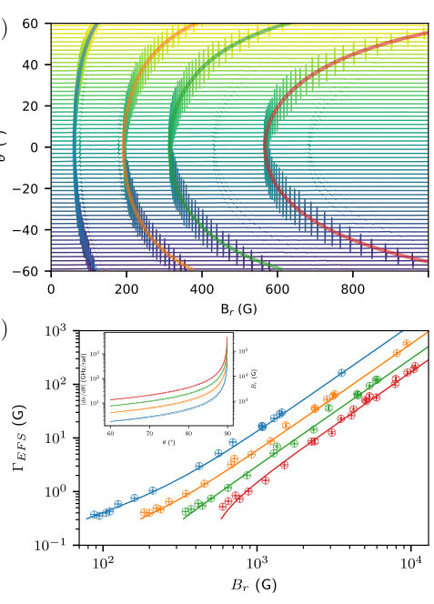
<figcaption class="paper-figure-caption"><b>Fig 1.</b> FIG. 1. a) CW-EPR spectra at 13 K, each offset vertically ac- cording to the orientation θ of the applied field relative to the crystal c-axis. The four hyperfine transitions of the effective spin-1/2 of Tb3+ are labeled L1 to L4 (dashed colored lines), computed from Eq. (3) with mI = +1/2 (L1, blue), +3/2 (L2, orange), −1/2 (L3, green) and −3/2 (L4, red). Near θ ∼0, all four lines fall below 700 G owing to the large g∥; they di- verge as θ →π/2. Line L2 appears as a fold-back of a branch whose physical resonance occurs at negative applied field (see text). The other small visible lines are identified as Tb3+</figcaption>
</figure>
<figure class="paper-figure-card">
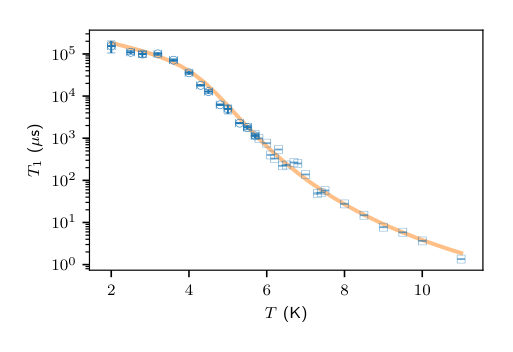
<figcaption class="paper-figure-caption"><b>Fig 2.</b> FIG. 2. Measured spin-lattice relaxation time T1 of Tb3+ in CaWO4 as a function of temperature (blue dots and squares), extracted by inversion recovery. Solid line, Eq. (7) with coef- ficients from Refs. [47, 48]. Measurements (dots and squares) were performed in two independent laboratories.</figcaption>
</figure>
<figure class="paper-figure-card">
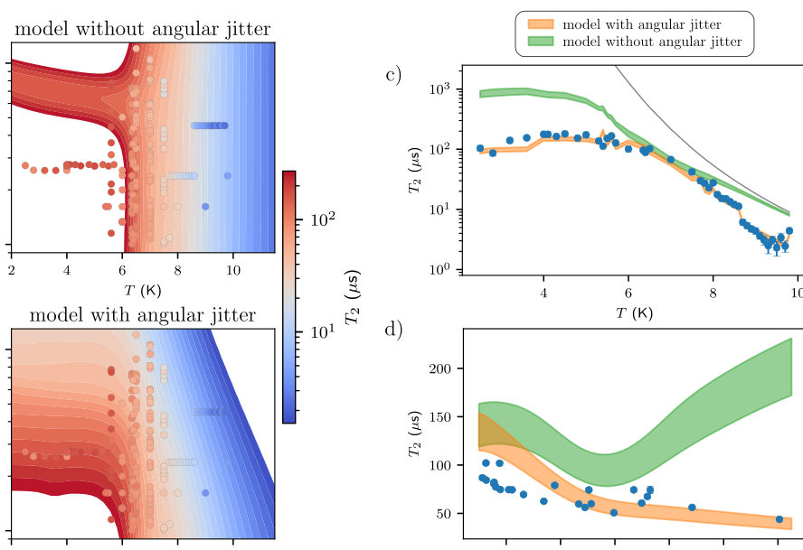
<figcaption class="paper-figure-caption"><b>Fig 3.</b> FIG. 3. Hahn-echo coherence time T2 of Tb3+ in CaWO4. a,b) Colored dots, measured T2 as a function of temperature T and resonant field Br. Colored contours, model a) without and b) with angular fluctuations. For visibility, contours outside the colorbar range [1.5 µs, 270 µs] are not shown. c) Blue dots, maximum measured T2 at each temperature. Solid gray line, physical limit 2T1 from Eq. (7). d) Blue dots, measured T2 as a function of resonant field at T = 6.5 K. In c,d), green shades, model without angular fluctuations; orange shades, model with angular fluctuations. Shade widths reflect combined uncertainties in temperature (0.05 K) and impurity concentrations (Appendix A 3).</figcaption>
</figure>
<figure class="paper-figure-card">
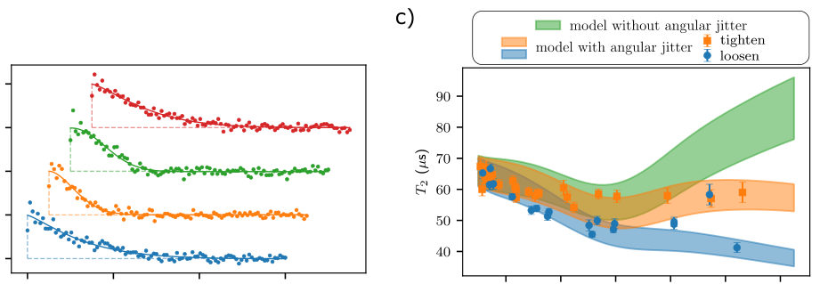
<figcaption class="paper-figure-caption"><b>Fig 4.</b> FIG. 4. Angular jitter as the dominant decoherence channel. a) Schematic of the two angular-jitter pathways: a global rotation δθext of the crystal relative to the fixed laboratory field, driven by mechanical vibrations; and a local phonon-driven modulation δθph of the crystal c-axis at the unit-cell level. b) Hahn-echo decay at T = 4 K and Br = 2565 G in four controlled pump configurations. Blue, reference state (T2 = 142 µs). Orange, auxiliary pump switched on (T2 = 83 µs). Green, same with damping weights on the cryostat tubing (T2 = 108 µs). Red, pump switched off, reference restored (T2 = 142 µs). Curves are offset vertically for visibility. The signal-to-noise ratio of the echo decay...</figcaption>
</figure>
<figure class="paper-figure-card">
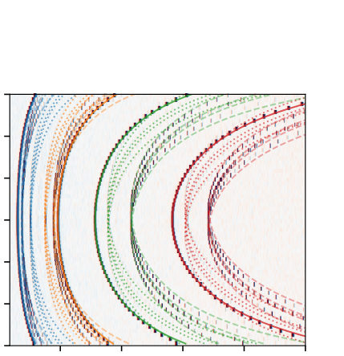
<figcaption class="paper-figure-caption"><b>Fig 5.</b> FIG. 5. Colorplot, measured CW-EPR spectra in parallel mode. The colorscale is logarithmic to enhance the visibility of the small lines. Computed Tb3+ EPR lines (blue L1, orange L2, green L3, red L4) for S4 symmetry (solid lines), orthorhombic site 1 with ∆o1 = 5.49 GHz (dashed lines), and orthorhombic site 2 with ∆o2 = 7.44 GHz (dotted lines).</figcaption>
</figure>
</div>

<p><strong>Summary.</strong> The researchers used electron paramagnetic resonance on $  ext{Tb}^{3+}$ ions to study quantum coherence, finding that conventional models failed to explain the measured coherence time ($T_2$). They successfully incorporated dynamical angular fluctuations of the crystal axis into their model, demonstrating that ambient vibrations are a dominant, quantifiable decoherence mechanism for anisotropic solid-state spins.</p>
<p><strong>Why it may be interesting.</strong> This work provides a direct, measurable link between solid-state quantum coherence properties and macroscopic environmental noise (vibrations), offering a novel, highly sensitive quantum sensor platform.</p>
<details>
<summary>Detailed structure</summary>
<p><strong>Main problem.</strong> To utilize the spin transitions of strongly anisotropic rare-earth ions as a highly sensitive quantum coherence probe for measuring ambient angular fluctuations.</p>
<p><strong>Main result.</strong> The dominant decoherence pathway is found to be due to dynamical angular fluctuations of the crystal axis, which can be quantified and modeled by extending standard spin-bath theories.</p>
<p><strong>Method.</strong> Pulsed electron paramagnetic resonance (EPR) measurements are used to map the Hahn-echo coherence time ($T_2$) as a function of temperature and magnetic field, comparing results against detailed theoretical models.</p>
<p><strong>Model / system.</strong> The system involves $   ext{Tb}^{3+}$ ions in a $   ext{CaWO}_4$ crystal, which possesses strong magnetic anisotropy ($g_{\perp}=0$). The analysis models the spin Hamiltonian and incorporates contributions from spin-lattice relaxation, impurity diffusion, and crucially, angular jitter.</p>
<p><strong>Key observables.</strong> Hahn-echo coherence time ($T_2$), $  ext{EPR}$ linewidth ($\Gamma_{	ext{EFS}}$), and the temperature/field dependence of $T_2$.</p>
<p><strong>Important parameters / regimes.</strong> Temperature range (2 to 10 K), resonant field ($10^3$ to $10^4$ G), and the angular noise spectral density ($\sim 36 	ext{ n}\circ/\sqrt{	ext{Hz}}$).</p>
<p><strong>Assumptions / limitations.</strong> The initial model failed because it neglected the dynamical angular fluctuations of the crystal axis, which was confirmed by controlled mechanical experiments.</p>
<p><strong>Figures summary.</strong> Figures show $ ext{EPR}$ spectra illustrating field-dependent transitions, linewidth measurements ($\Gamma_{	ext{EFS}}$) showing angular divergence, and $T_2$ measurements demonstrating deviations from simple spin-bath models.</p>
<p><strong>Paper structure.</strong> The paper establishes the physical sensitivity of the spin system to orientation, presents initial modeling failures, and culminates in a successful two-parameter extension that incorporates dynamical angular fluctuations to reproduce all experimental data.</p>
</details>
<details>
<summary>Abstract</summary>
<p>Strongly anisotropic non-Kramers rare-earth ions combine giant longitudinal g-factors with a vanishing transverse component imposed by time-reversal symmetry, a combination that makes their spin transitions exquisitely sensitive to the orientation of the applied magnetic field. We show that this sensitivity carries a dual identity: it is simultaneously an overlooked decoherence channel and the basis for a spin-coherence-based angular probe. Using pulsed electron paramagnetic resonance at X-band, we report the first measurements of the quantum coherence of Tb$^{3+}$ in a native-doped CaWO$_4$ crystal (15 ppb) and map the Hahn-echo coherence time $T_2$ as a function of temperature (2 to 10 K) and resonant field ($10^3$ to $10^4$ G). A parameter-free model combining spin-lattice relaxation, instantaneous diffusion and spectral diffusion from all independently quantified impurities overestimates $T_2$ by an order of magnitude at low temperature and wrongly predicts the field dependence of $T_2$, inconsistent with the observed monotonic decrease of $T_2$ with $B_r$. A two-parameter extension, including dynamical angular fluctuations of the crystal axis, reproduces the full dataset across multiple setups and laboratories. Two controlled experiments nominally identical except for different mechanical configuration of the setup establish the mechanical origin of the dominant contribution. The two-parameter extension corresponds to an angular amplitude noise spectral density of overall order 36 n°/$\sqrt{Hz}$ from global external vibrations (ranging from 10 to 66 n°/$\sqrt{Hz}$ depending on the exact setup mechanical configuration) estimated at $\sim$ 2.5 kHz plus a temperature-dependent contribution assumed to come from local phonon-driven angular jitter. It identifies and highlights a decoherence pathway of practical relevance to any anisotropic solid-state spin system.</p>
</details>
<p><sub><a href="#top">↑ back to top</a></sub></p>

<p><a id="paper-2609.04187"></a></p>
<h3 id="wavefunctions-for-anyon-superconductors"><a href="http://arxiv.org/abs/2609.04187v1">Wavefunctions for Anyon Superconductors</a></h3>
<p><strong>Authors:</strong> Donghae Seo, Taegon Lee, Gil Young Cho<br>
<strong>Type:</strong> theory · <strong>Category:</strong> strongly correlated electrons · <strong>PDF:</strong> <a href="https://arxiv.org/pdf/2609.04187v1">https://arxiv.org/pdf/2609.04187v1</a><br>
<strong>Analysis basis:</strong> full PDF text, analyzed in chunks
<strong>Topic relevance:</strong> <code>Keldysh / 2PI / non-Gaussian methods</code> <strong>1/5</strong> · <code>analog quantum simulation</code> <strong>1/5</strong></p>
<div class="figure-strip-hint">↔ Scroll figures horizontally</div>
<div class="paper-figures-scroll">
<figure class="paper-figure-card">
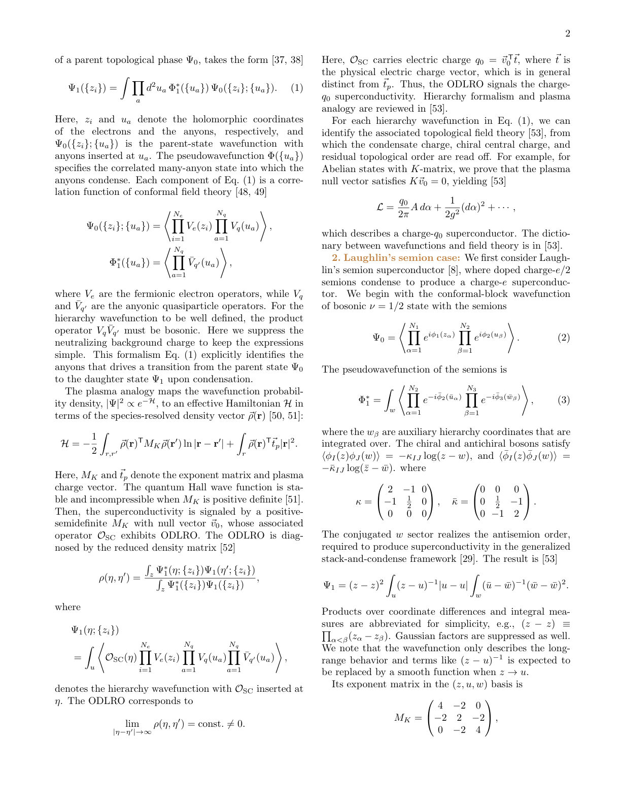
<figcaption class="paper-figure-caption"><b>Fig 1.</b> Low-resolution page preview, page 2</figcaption>
</figure>
<figure class="paper-figure-card">
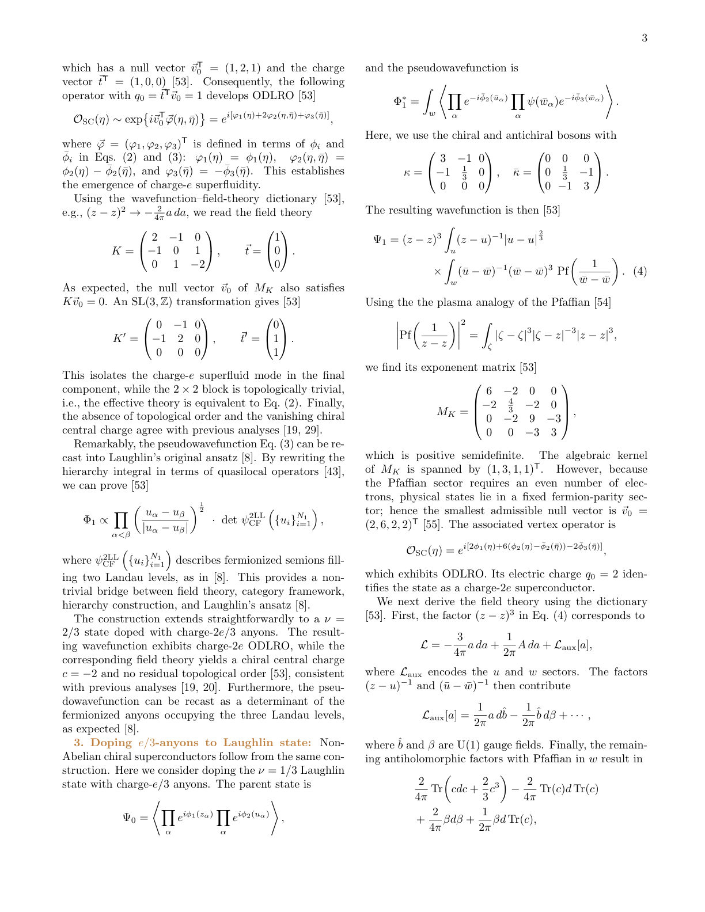
<figcaption class="paper-figure-caption"><b>Fig 2.</b> Low-resolution page preview, page 3</figcaption>
</figure>
<figure class="paper-figure-card">
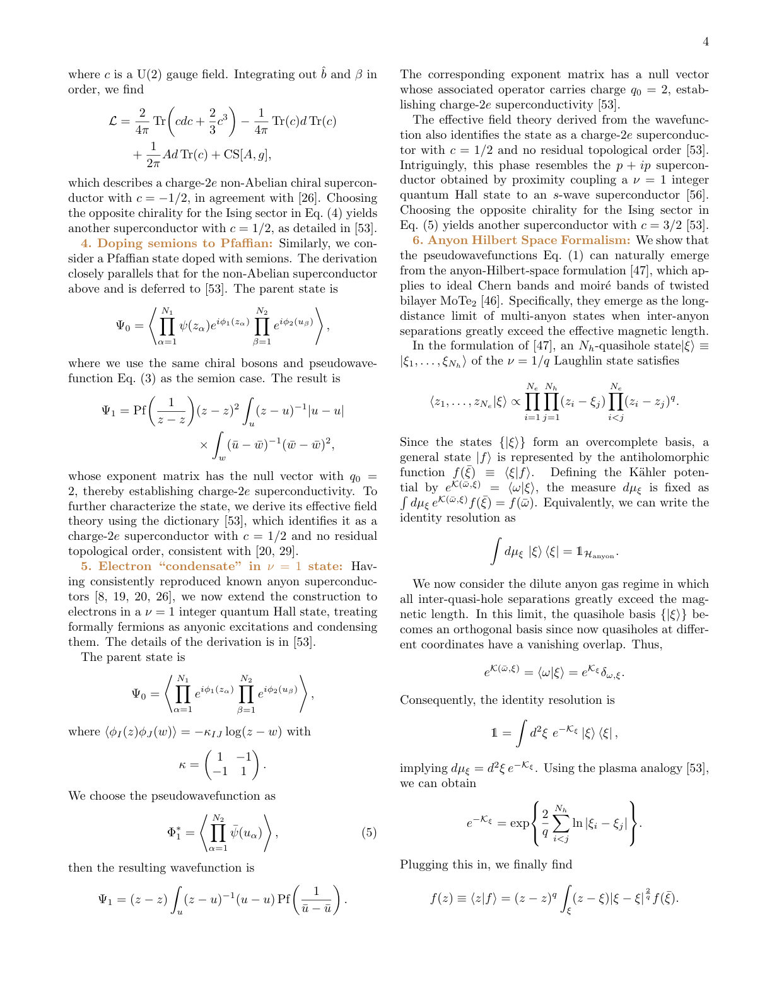
<figcaption class="paper-figure-caption"><b>Fig 3.</b> Low-resolution page preview, page 4</figcaption>
</figure>
<figure class="paper-figure-card">
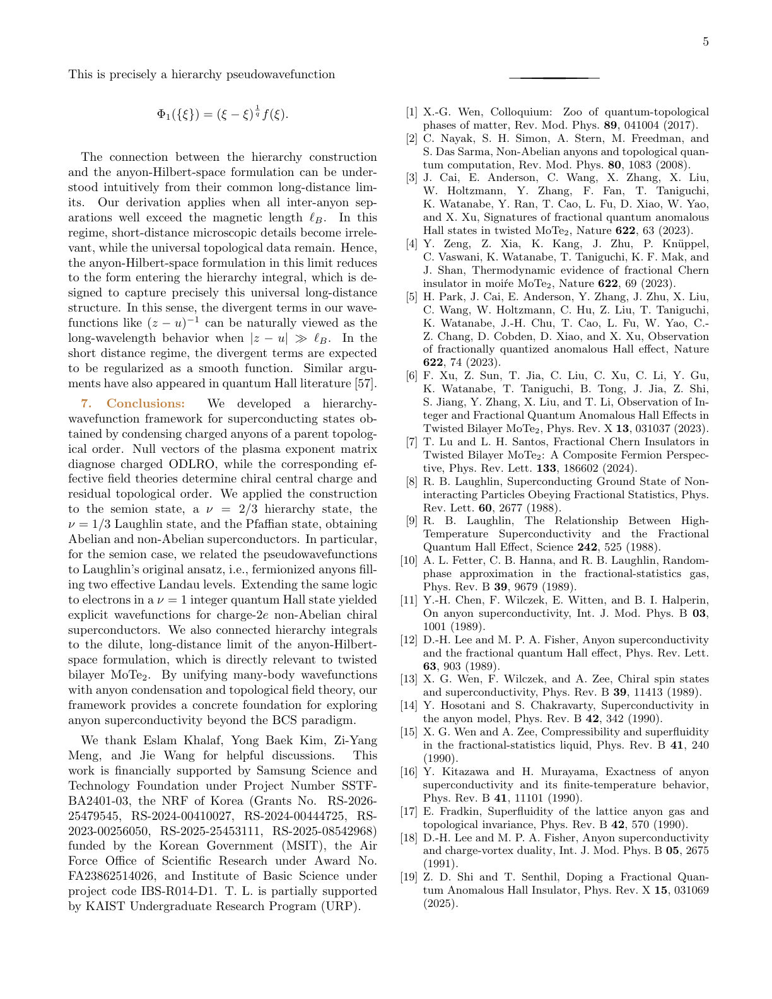
<figcaption class="paper-figure-caption"><b>Fig 4.</b> Low-resolution page preview, page 5</figcaption>
</figure>
<figure class="paper-figure-card">
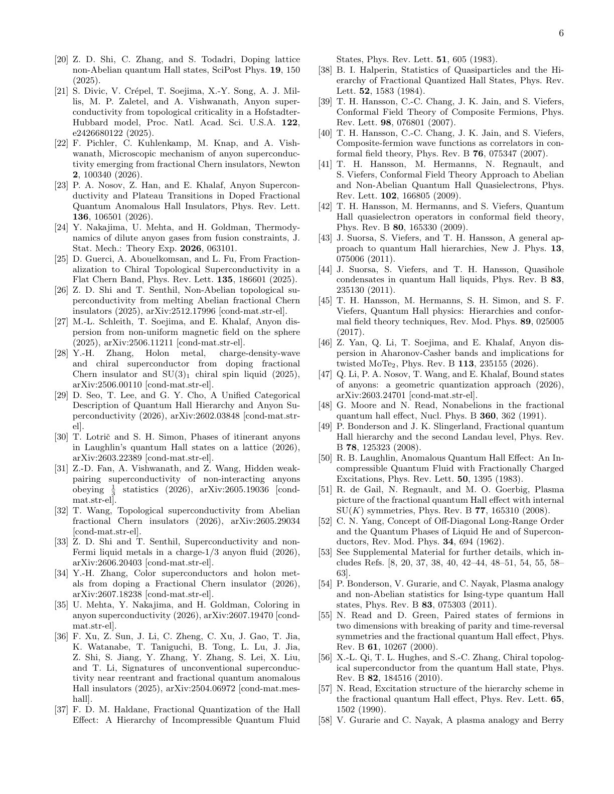
<figcaption class="paper-figure-caption"><b>Fig 5.</b> Low-resolution page preview, page 6</figcaption>
</figure>
</div>

<p><strong>Summary.</strong> This work develops a comprehensive wavefunction framework to describe anyon superconductivity, moving beyond conventional BCS theory. By constructing hierarchy wavefunctions derived from topological orders, the authors successfully diagnose superconducting order and topological properties for systems like the $\nu=2/3$ state. This establishes a unified theoretical link between anyon condensation, superconducting pairing, and topological field theory.</p>
<p><strong>Why it may be interesting.</strong> The rigorous wavefunction approach provides a powerful, concrete tool to analyze topological superconductivity, bridging abstract CFT concepts with measurable physical diagnostics like ODLRO.</p>
<details>
<summary>Detailed structure</summary>
<p><strong>Main problem.</strong> The paper aims to develop a systematic wavefunction description for anyon superconductors, as a general framework is currently lacking despite existing field-theoretic descriptions.</p>
<p><strong>Main result.</strong> A unified wavefunction-level framework is established, successfully linking anyon condensation, superconducting order, and topological field theory for various fractional quantum Hall states.</p>
<p><strong>Method.</strong> The authors develop a 'hierarchy-wavefunction construction' using the plasma analogy and topological field theories to analyze superconducting states derived from parent topological orders.</p>
<p><strong>Model / system.</strong> The study focuses on anyon superconductors, where superconductivity arises from mobile anyon condensation rather than conventional Cooper pairing. Specific models include the $\nu=2/3$ state, Laughlin states ($\nu=1/3$), and the Pfaffian state.</p>
<p><strong>Key observables.</strong> Off-Diagonal Long-Range Order (ODLRO), condensate charge, chiral central charge, and residual topological order.</p>
<p><strong>Important parameters / regimes.</strong> The analysis examines the long-distance limit of the anyon-Hilbert-space formulation, which applies to ideal Chern bands and moiré bands.</p>
<p><strong>Assumptions / limitations.</strong> The formalism relies on the correspondence between quantum Hall hierarchy states and anyon superconductivity, and the plasma analogy requires the exponent matrix to be positive semidefinite.</p>
<p><strong>Paper structure.</strong> The paper progresses by first defining the general hierarchy wavefunction construction, then applying it to specific fractional quantum Hall states (semions, $\nu=2/3$, $\nu=1/3$), and finally using the reduced density matrix and ODLRO operator to confirm the superconducting nature across all cases.</p>
</details>
<details>
<summary>Abstract</summary>
<p>Anyon superconductivity arises from the condensation of mobile anyons rather than from a conventional Cooper instability, yet a systematic wavefunction description remains lacking. We develop a hierarchy-wavefunction construction for superconducting states derived from parent topological orders and identify their off-diagonal long-range order, condensate charge, chiral central charge, and residual topological order through the plasma analogy and topological field theories. We construct Abelian and non-Abelian examples descending from the semion state, a $ν=2/3$ hierarchy state, the $ν=1/3$ Laughlin state, $ν=1$ integer quantum Hall state, and Pfaffian state. Remarkably, for the semion case, the superconducting many-semion wavefunction is equivalent to a state of fermionized anyons filling two effective Landau levels, recovering Laughlin's original construction of semion superconductor. Finally, we show that hierarchy wavefunctions emerge naturally in the dilute, long-distance limit of the anyon-Hilbert-space formulation, which applies to ideal Chern bands and moiré bands of twisted bilayer MoTe$_2$. Our results establish a unified wavefunction-level framework linking anyon condensation, superconducting order, and topological field theory.</p>
</details>
<p><sub><a href="#top">↑ back to top</a></sub></p>

<p><a id="paper-2609.04076"></a></p>
<h3 id="algebraic-operator-decomposition-a-partitioned-architecture-for-noise-resilient-quantum-computing"><a href="http://arxiv.org/abs/2609.04076v1">Algebraic Operator Decomposition: A Partitioned Architecture for Noise-Resilient Quantum Computing</a></h3>
<p><strong>Authors:</strong> Wladimir Silva<br>
<strong>Type:</strong> theory · <strong>Category:</strong> quantum information and computing · <strong>PDF:</strong> <a href="https://arxiv.org/pdf/2609.04076v1">https://arxiv.org/pdf/2609.04076v1</a><br>
<strong>Analysis basis:</strong> full PDF text, analyzed in chunks
<strong>Topic relevance:</strong> <code>quantum measurements</code> <strong>1/5</strong></p>
<div class="figure-strip-hint">↔ Scroll figures horizontally</div>
<div class="paper-figures-scroll">
<figure class="paper-figure-card">
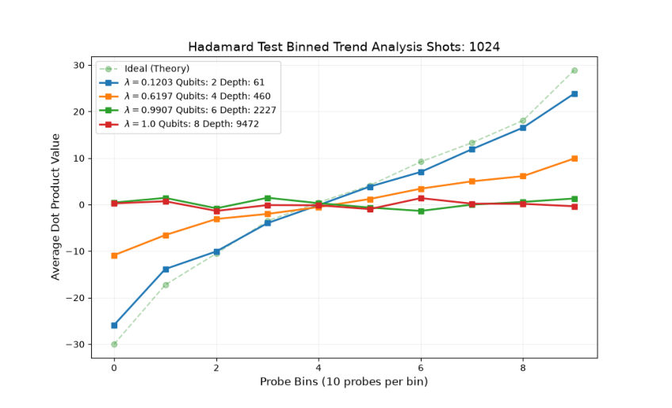
<figcaption class="paper-figure-caption"><b>Fig 1.</b> Fig. 4: Visual Feature Space Division. For shallow partitions (λ = 0.1203, 2 Qubits, Depth: 61), the average dot product value tightly tracks the ideal baseline. As the circuit depth increases to D = 460 (λ = 0.6197, 4 Qubits), a noticeable flattening of the slope occurs. This highlights the early stages of information dissipation.</figcaption>
</figure>
<figure class="paper-figure-card">
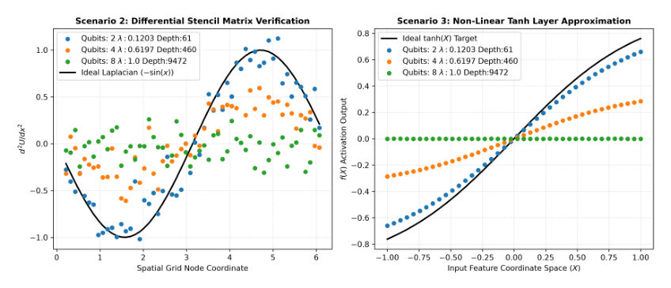
<figcaption class="paper-figure-caption"><b>Fig 2.</b> Fig. 5: In the low-depth partition tier (n = 2, λ = 0.1203, D = 61), both mathematical operators demonstrate excellent structural stability, tracking the precise contours of the exact analytical targets (−sin(x) and tanh(X)) with minimal variance. At the deepest monolithic threshold (n = 8, λ = 1.0, D = 9472), phase-decoherence completely dominates the system.</figcaption>
</figure>
<figure class="paper-figure-card">
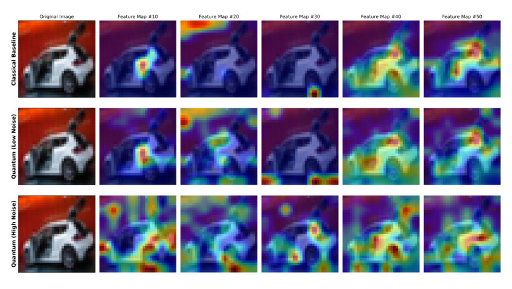
<figcaption class="paper-figure-caption"><b>Fig 3.</b> Fig. 6: Quantum Convolution: forward inference pass on the first car image of CIFAR-10 under Ideal, Low Noise (λ = 0.1203, 2 Qubits, Depth: 61) and High Noise (λ = 0.6197, 4 Qubits, Depth: 460) settings using algorithms 1, and 2. Note: Algorithm 1 emulates the expected measurement statistics of the Hadamard-test primitive under the adopted depolarizing/readout noise model.</figcaption>
</figure>
<figure class="paper-figure-card">
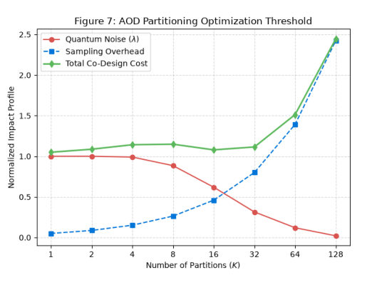
<figcaption class="paper-figure-caption"><b>Fig 4.</b> Fig. 7: AOD partitioning tradeoff across K channels. The optimization curve illustrates the competitive crossover front between quantum gate attenuation and classical sampling expansion factors.</figcaption>
</figure>
</div>

<p><strong>Summary.</strong> This paper introduces Algebraic Operator Decomposition (AOD), a method to break down complex quantum operations into many smaller, shallow, and independent sub-circuits. By processing these fragments in parallel and summing the results classically, it proactively mitigates noise accumulation by keeping the circuit depth below hardware coherence limits. This shifts the computational bottleneck from deep quantum coherence to manageable classical sampling overhead.</p>
<p><strong>Why it may be interesting.</strong> It provides a novel, mathematically rigorous framework for structuring quantum computations that directly addresses the depth limitations inherent in NISQ devices, which is highly relevant to open quantum systems modeling.</p>
<details>
<summary>Detailed structure</summary>
<p><strong>Main problem.</strong> The primary challenge is mitigating noise and decoherence in Noisy Intermediate-Scale Quantum (NISQ) computing by avoiding error correction entirely.</p>
<p><strong>Main result.</strong> The proposed Algebraic Operator Decomposition (AOD) successfully reduces the required quantum circuit depth by fracturing global operators into shallow, independent sub-channels.</p>
<p><strong>Method.</strong> AOD decomposes a global linear operator into a sum of local operators, which are then processed in parallel using a MapReduce model based on a commutative monoid.</p>
<p><strong>Model / system.</strong> The framework is built upon operators belonging to a Vector Space over Additive Abelian Groups, applicable to complex quantum operations like inner products, convolutions, and differential operators.</p>
<p><strong>Key observables.</strong> The reconstructed global observable ($\langle T 
angle$), the required shot budget ($S_{	ext{total}}$), and the error bound ($\Delta T$).</p>
<p><strong>Important parameters / regimes.</strong> Noise parameters ($\epsilon_{1Q}, \epsilon_{2Q}$), hardware-dependent coherence threshold ($D_{	ext{max}}$), and the number of partitions ($K$).</p>
<p><strong>Assumptions / limitations.</strong> The approach assumes independent local noise channels and trades reduced quantum depth for increased classical reconstruction and sampling overhead.</p>
<p><strong>Figures summary.</strong> Figures illustrate the quantum circuits for specific scenarios, such as the Hadamard Test for inner products and the evolution across discrete operational slices for differential operators.</p>
<p><strong>Paper structure.</strong> The paper introduces AOD, details its application to various global operations (e.g., dot products, convolutions), derives theoretical bounds on error containment and sampling cost, and concludes with optimization strategies.</p>
</details>
<details>
<summary>Abstract</summary>
<p>We present an operator-decomposition architecture that mathematically maps a global operator into independently executable local operators, reducing the maximum quantum circuit depth at the cost of classical reconstruction and sampling overhead. By framing complex Quantum Circuits around an operator in a vector space that can be algebraically pre-decomposed, AOD complements quantum error correction and error-mitigation approaches by performing algebraic decomposition before quantum execution.   Our approach leans in the computer science definition of a Monoid: a design pattern and mathematical concept consisting of a data type, a combining function that is associative, and a safe identity (neutral) element that does not change other values when combined. Simulation wise we define a MapReduce programming model where the addition (+) is the reducer, thus leveraging a naturally stable commutative monoid which carries zero "negative-probability tax" or phase conflicts.   Furthermore, we define a Vector Space of Linear Operators over Additive Abelian Groups that benefit from this paradigm, including: Inner Products, Series expansions, Traces and Convolutions. Finally, we present the mathematical foundations and simulation results for this paradigm.</p>
</details>
<p><sub><a href="#top">↑ back to top</a></sub></p>

<p><a id="paper-2609.04041"></a></p>
<h3 id="cutting-corners-exciting-and-magical-bounds-from-the-cusp-bootstrap"><a href="http://arxiv.org/abs/2609.04041v1">Cutting corners: exciting and magical bounds from the cusp bootstrap</a></h3>
<p><strong>Authors:</strong> Ryan A. Lanzetta, Ian Moult, Yifan Wang<br>
<strong>Type:</strong> theory · <strong>Category:</strong> strongly correlated electrons · <strong>PDF:</strong> <a href="https://arxiv.org/pdf/2609.04041v1">https://arxiv.org/pdf/2609.04041v1</a><br>
<strong>Analysis basis:</strong> full PDF text, analyzed in chunks
<strong>Topic relevance:</strong> <code>Keldysh / 2PI / non-Gaussian methods</code> <strong>1/5</strong></p>
<div class="figure-strip-hint">↔ Scroll figures horizontally</div>
<div class="paper-figures-scroll">
<figure class="paper-figure-card">
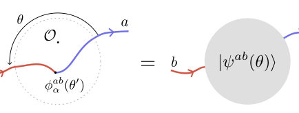
<figcaption class="paper-figure-caption"><b>Fig 1.</b> FIG. 2. An arbitrary configuration of defects and other operator in- sertions within a sphere punctured at right angles by defects a, b, where the relative angle between the punctures is θ, defines a state in the radial Hilbert space |ψab(θ)⟩∈Hab(θ), whose eigenstates are in correspondence with cusped defect-changing operators. Im- portantly, the defects puncture the surrounding sphere orthogonally so the COE can be strictly applied.</figcaption>
</figure>
<figure class="paper-figure-card">
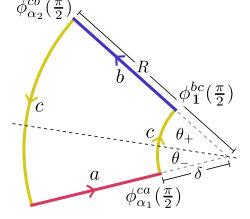
<figcaption class="paper-figure-caption"><b>Fig 2.</b> FIG. 3. A graphical illustration of the wedge-shaped defect used in the proof of eq. (11). The inner and outer radii are δ, R, respec- tively. The dotted lines extending past the upper and lower straight edges intersect at the point where the COE is performed over cusped defect-changing operators.</figcaption>
</figure>
<figure class="paper-figure-card">
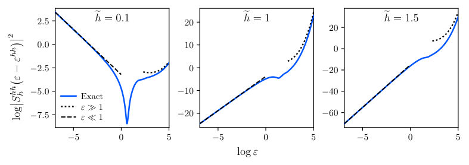
<figcaption class="paper-figure-caption"><b>Fig 3.</b> FIG. 5. The energy structure constants for the rectangular pinning field amplitude A(y) for the 3+1d massless free scalar for ˜h = 0.1, 1, 1.5. The dashed and dotted curves indicate, respectively, the ε ≪1 and ε ≫1 asymptotics given in eq. (18). The curves are generated by taking the inverse Laplace transform of the series expansion eq. (A12) to large order in y−1.</figcaption>
</figure>
</div>

<p><strong>Summary.</strong> This theoretical paper derives universal, rigorous lower bounds on the anomalous dimensions characterizing sharp corners (cusps) of line defects in a CFT. By applying bootstrap consistency checks across various defect geometries, the authors establish fundamental constraints on the underlying quantum field theory structure. This work provides powerful mathematical tools for constraining physical theories based on symmetry and consistency.</p>
<p><strong>Why it may be interesting.</strong> While focused on CFT, the techniques involving universal bounds derived from consistency conditions (bootstrap) are highly relevant to understanding critical points and strongly correlated systems where such constraints often appear.</p>
<details>
<summary>Detailed structure</summary>
<p><strong>Main problem.</strong> The paper aims to establish general, universal bounds on the cusp anomalous dimensions ($\Gamma$) associated with line defects in a Conformal Field Theory (CFT). These bounds are derived from fundamental principles like unitarity and the consistency of defect geometries.</p>
<p><strong>Main result.</strong> The authors prove that singlet cusps are the lightest possible cusps and derive an optimal, universal lower bound for the dimension of a right-angle bare cusp using bootstrap constraints.</p>
<p><strong>Method.</strong> The analysis employs advanced techniques including the Operator State Correspondence (OSC), the Cusp Operator Expansion (COE), and applying bootstrap constraints derived from varying defect geometries (e.g., rectangular or wedge shapes).</p>
<p><strong>Model / system.</strong> The study is set in the context of conformal line defects within a Conformal Field Theory (CFT). The analysis uses concepts from radial and flat quantization to model the dynamics of these defects.</p>
<p><strong>Key observables.</strong> Cusp anomalous dimensions ($\Gamma$), the universal defect Casimir energy ($\epsilon_{aar{a}}$), and the bare cusp dimension ($\Gamma_{aar{a}}^0(	heta)$).</p>
<p><strong>Important parameters / regimes.</strong> The cusp angle ($   heta$), the separation distance ($L$), and the geometry of the defect configuration (e.g., right angle, rectangular).</p>
<p><strong>Assumptions / limitations.</strong> The theory is assumed to be local, unitary, and possess a complete defect Hilbert space. The derived bounds are claimed to be valid in any scale-invariant theory.</p>
<p><strong>Figures summary.</strong> Figure 1 illustrates cusped defect changing operators; Figure 2 shows defect configurations on a sphere punctured at right angles; Figure 3 illustrates the wedge-shaped defect used in the proof of one of the key inequalities.</p>
<p><strong>Paper structure.</strong> The paper builds by first establishing foundational results regarding singlet cusps and then deriving increasingly general bounds by applying consistency checks (bootstrap constraints) to increasingly complex defect geometries (e.g., rectangular, cuboid).</p>
</details>
<details>
<summary>Abstract</summary>
<p>An illuminating probe of the dynamics of a line defect is the global geometry of its worldline. For a conformal line defect in a conformal field theory, sharp corners in the worldline, i.e. cusps, host dynamical degrees of freedom characterized in part by a spectrum of scaling dimensions, called cusp anomalous dimensions. We present various general bounds on cusp anomalous dimensions following from unitarity and cutting-and-gluing consistency of different defect geometries. We first establish, for cusps involving conjugate defects, that level crossings upon varying the cusp angle are forbidden between the lightest singlet cusp and any non-singlet cusp, proving that singlet cusps are the lightest. Then, we study line defects arranged in a rectangular geometry, which are subject to bootstrap constraints reminiscent of the spinless modular bootstrap. We find an analytic ``magic" functional that produces an optimal and universal lower bound on the dimension of a right angle bare cusp in terms of the universal defect Casimir energy between the corresponding defect and its conjugate in flat space.</p>
</details>
<p><sub><a href="#top">↑ back to top</a></sub></p>

<p><a id="paper-2609.03220"></a></p>
<h3 id="discretization-aware-fine-tuning-for-quantum-machine-learning-with-chemical-foundation-models"><a href="http://arxiv.org/abs/2609.03220v1">Discretization-Aware Fine-Tuning for Quantum Machine Learning with Chemical Foundation Models</a></h3>
<p><strong>Authors:</strong> Shunji Matsuura, Sonika Johri<br>
<strong>Type:</strong> theory · <strong>Category:</strong> quantum information and computing · <strong>PDF:</strong> <a href="https://arxiv.org/pdf/2609.03220v1">https://arxiv.org/pdf/2609.03220v1</a><br>
<strong>Analysis basis:</strong> full PDF text, analyzed in chunks
<strong>Topic relevance:</strong> <code>quantum measurements</code> <strong>1/5</strong></p>
<div class="figure-strip-hint">↔ Scroll figures horizontally</div>
<div class="paper-figures-scroll">
<figure class="paper-figure-card">
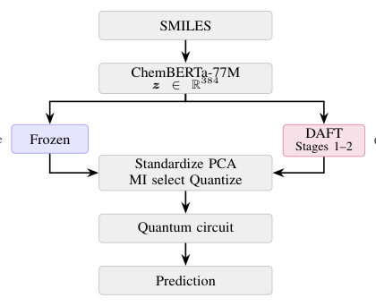
<figcaption class="paper-figure-caption"><b>Fig 1.</b> Fig. 1. Pipeline overview. SMILES strings are mapped to embeddings by ChemBERTa-77M. The baseline (blue) uses frozen embeddings, while the proposed method (purple) applies discretization-aware fine-tuning (DAFT). Both paths share the same preprocessing pipeline (standardization, PCA, mutual information selection, and quantization) to produce bit-string inputs for the quantum circuit. All classical baselines are evaluated on identical inputs for fair comparison.</figcaption>
</figure>
<figure class="paper-figure-card">

<figcaption class="paper-figure-caption"><b>Fig 2.</b> Figure 1 provides an overview of the complete pipeline. We describe the components in turn.</figcaption>
</figure>
</div>

<p><strong>Summary.</strong> This work addresses the information bottleneck in QML by introducing Discretization-Aware Fine-Tuning (DAFT). DAFT modifies the representation learning process to minimize data collisions during quantization, which is crucial for near-term quantum devices. The results prove that achieving quantum advantage requires explicitly aligning continuous chemical embeddings with the discrete constraints of quantum encoding.</p>
<p><strong>Why it may be interesting.</strong> While focused on ML, the core concept of information compression and the necessity of preserving continuous information structure when mapping to discrete quantum states is highly relevant to understanding quantum channel capacity and encoding schemes in quantum information theory.</p>
<details>
<summary>Detailed structure</summary>
<p><strong>Main problem.</strong> The primary challenge in Quantum Machine Learning (QML) is the information bottleneck where high-dimensional classical data must be compressed into limited quantum registers, leading to cross-class collisions.</p>
<p><strong>Main result.</strong> The proposed Discretization-Aware Fine-Tuning (DAFT) method significantly reduces these collisions, enabling the quantum model to surpass a matched classical baseline at higher qubit counts.</p>
<p><strong>Method.</strong> DAFT adapts a pre-trained chemical foundation model using a differentiable soft collision loss to ensure that the resulting quantized representations remain highly informative.</p>
<p><strong>Model / system.</strong> The system uses near-term quantum devices processing molecular representations derived from chemical foundation models (like ChemBERTa-77M) via bit-string encoding.</p>
<p><strong>Key observables.</strong> Collision count, quantum classification accuracy, and the performance gap compared to a matched classical baseline.</p>
<p><strong>Important parameters / regimes.</strong> Qubit count (tested up to 10 qubits), and the degree of information compression imposed by the bit-string encoding.</p>
<p><strong>Assumptions / limitations.</strong> The comparison isolates the effect of representation by ensuring both quantum and classical models receive identical discretized bit-string inputs.</p>
<p><strong>Figures summary.</strong> Figures illustrate the pipeline comparing baseline vs. DAFT, and tables summarize the reversal of performance advantage from classical-wins to quantum-wins as qubit count increases.</p>
<p><strong>Paper structure.</strong> The paper introduces the problem of data compression in QML, details the DAFT methodology (including soft collision loss), evaluates it on a molecular property prediction benchmark, and concludes by demonstrating the conditions necessary for quantum advantage.</p>
</details>
<details>
<summary>Abstract</summary>
<p>A key challenge in practical quantum machine learning (QML), particularly for discriminative tasks such as classification, is the limited capacity of near-term quantum devices to encode high-dimensional classical data into small quantum registers. In optimized basis-encoded (bit-bit) settings, this constraint leads to cross-class collisions, where samples with different labels are mapped to the same discrete bit-string and thus become indistinguishable to any downstream model. In this work, we investigate how data representation affects QML performance under such severe information bottlenecks. We introduce discretization-aware fine-tuning (DAFT), a method that adapts a pre-trained chemical foundation model to produce representations that remain informative after quantization. DAFT reduces collision probability through a differentiable soft collision loss. We evaluate both quantum and classical models under a controlled setting in which they receive identical discretized bit-string inputs, isolating the effect of representation from model architecture. On the blood-brain barrier penetration (BBBP) molecular property prediction benchmark using ChemBERTa-77M, DAFT reduces collision counts by several orders of magnitude and improves quantum classification accuracy by more than 12 percentage points compared to a frozen backbone. Importantly, without DAFT, classical models outperform QML under the same input constraints. With DAFT, however, this comparison reverses at higher qubit counts. At 10 qubits, the quantum model surpasses a matched classical baseline trained on identical bit-strings (0.883 vs. 0.855, $p = 0.026$). These results show that, in information-constrained regimes, achieving a quantum advantage critically depends on aligning continuous representations with discrete quantum encodings.</p>
</details>
<p><sub><a href="#top">↑ back to top</a></sub></p>

<p><a id="paper-2609.03994"></a></p>
<h3 id="evolution-of-electron-spin-resonance-through-a-metallic-quantum-critical-phase-diagram"><a href="http://arxiv.org/abs/2609.03994v1">Evolution of electron spin resonance through a metallic quantum critical phase diagram</a></h3>
<p><strong>Authors:</strong> Marc Scheffler, Jörg Sichelschmidt, Conrad Clauss, Mojtaba Javaheri Rahim, Boris I. Kochelaev, Cornelius Krellner, Christoph Geibel, Frank Steglich, Martin Dressel<br>
<strong>Type:</strong> both · <strong>Category:</strong> strongly correlated electrons · <strong>PDF:</strong> <a href="https://arxiv.org/pdf/2609.03994v1">https://arxiv.org/pdf/2609.03994v1</a><br>
<strong>Analysis basis:</strong> full PDF text, analyzed in chunks
<strong>Topic relevance:</strong> <code>quantum measurements</code> <strong>1/5</strong></p>
<div class="figure-strip-hint">↔ Scroll figures horizontally</div>
<div class="paper-figures-scroll">
<figure class="paper-figure-card">
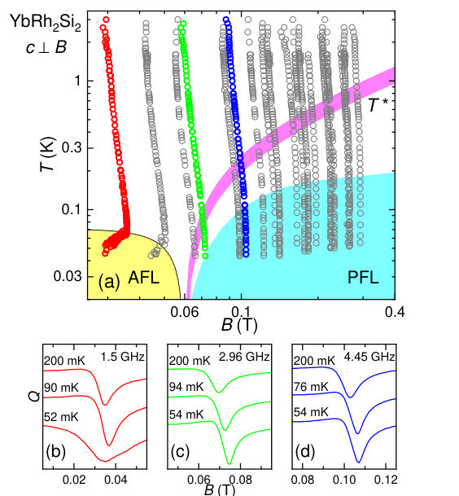
<figcaption class="paper-figure-caption"><b>Fig 1.</b> FIG. 1. Probing the phase diagram of YbRh2Si2 with ESR. (a) Overall phase diagram with extremely heavy LFL regimes showing AF order (AFL) and metallic paramagnetism (PFL), as well as the T ∗line [1]. The circles indicate the ESR res- onance field for different microwave frequencies obtained by temperature-dependent ESR measurements, i.e. we probe all relevant regimes. The pronounced evolution of these res- onance fields as function of temperature clearly differs for the different regimes, and directly reflects the temperature- dependent g factor. (b, c, d) Exemplary ESR spectra (background-corrected resonator quality factor Q as function of magnetic field B) for three resonance frequencies,...</figcaption>
</figure>
<figure class="paper-figure-card">
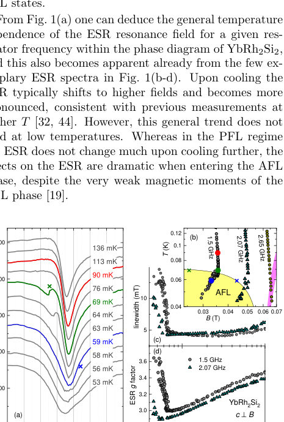
<figcaption class="paper-figure-caption"><b>Fig 2.</b> FIG. 2. ESR of YbRh2Si2 in the AFL phase and crossing the AF transition. (a) ESR spectra for selected temperatures at 1.5 GHz, including temperature and field ranges in the AFL phase. Q axis refers to 53 mK data, higher temperature data are shifted by 200 each. (b) ESR resonance fields for the three lowest resonator frequencies at low temperatures. Upon cooling, the modes at 1.5 and 2.07 GHz change drastically when entering the AFL phase. Data points at 59 mK, 69 mK, and 90 mK of the 1.5 GHz resonator correspond to colored spectra in (a). The crosses in (a) and (b) correspond to fields of the AFM transition at 59 and 69 mK. (c) ESR linewidth ∆B and (d) g factor increase drastically in the...</figcaption>
</figure>
<figure class="paper-figure-card">
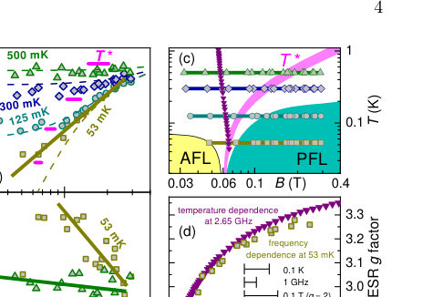
<figcaption class="paper-figure-caption"><b>Fig 3.</b> FIG. 4. Magnetic field dependence of ESR parameters in the paramagnetic regimes. (a) g factor and (b) effective ESR relaxation time τeff = Bres/ν∆B, for temperatures and reso- nance fields as indicated in panel (c). Solid lines guide the eye; dashed lines: molecular field model [43]. (c) Phase diagram of YbRh2Si2 with horizontal-line connected symbols (resonance fields) referring to data shown in the other frames. The solid triangles denote the resonance fields of the 2.65 GHz mode. (d) Comparison of the g factor temperature dependence in the quantum-critical regime (horizontal axis: T (K); ν = 2.65 GHz mode) and frequency dependence in the PFL regime (horizontal axis: ν (GHz); T ≈53 mK)....</figcaption>
</figure>
</div>

<p><strong>Summary.</strong> This work uses Electron Spin Resonance (ESR) spectroscopy to map the quantum critical phase diagram of the heavy-fermion metal YbRh2Si2. By tracking changes in the g-factor and linewidth, the authors distinguish the physics in paramagnetic, antiferromagnetic, and quantum-critical regimes. The results offer direct, microscopic evidence supporting theories of strongly correlated electron systems near a quantum critical point.</p>
<p><strong>Why it may be interesting.</strong> The detailed mapping of magnetic excitations (via ESR) across a quantum critical point provides a powerful, dynamic probe of the underlying many-body interactions, which is crucial for understanding non-Fermi liquid behavior in strongly correlated materials.</p>
<details>
<summary>Detailed structure</summary>
<p><strong>Main problem.</strong> The study investigates how electron spin resonance (ESR) properties evolve across the quantum critical phase diagram of a heavy-fermion metal.</p>
<p><strong>Main result.</strong> ESR measurements reveal distinct behaviors in the g-factor and linewidth across paramagnetic, antiferromagnetic, and quantum-critical regimes, providing microscopic insight into the underlying correlated electron physics.</p>
<p><strong>Method.</strong> The research combines novel, low-temperature ESR spectroscopy with theoretical modeling using effective spin Hamiltonians and molecular field approximations.</p>
<p><strong>Model / system.</strong> The system is the heavy-fermion metal YbRh2Si2, which exhibits a quantum phase transition between a paramagnetic Fermi-liquid (PFL) and an antiferromagnetic (AFL) state due to the interplay between local magnetic moments and conduction electrons.</p>
<p><strong>Key observables.</strong> ESR g-factor, ESR linewidth (Delta B), and the resonance field, measured as functions of temperature and magnetic field.</p>
<p><strong>Important parameters / regimes.</strong> Quantum critical point, Paramagnetic Fermi-Liquid (PFL) phase, Antiferromagnetic Liquid (AFL) phase, Kondo temperature scale ($T^*$).</p>
<p><strong>Assumptions / limitations.</strong> The analysis relies on approximating the system using an effective spin Hamiltonian and employing the molecular field approximation for theoretical modeling.</p>
<p><strong>Figures summary.</strong> Figures illustrate the overall phase diagram probed by ESR, show exemplary ESR spectra across different phases, and detail the temperature/field dependence of the effective g-factor, often comparing experimental fits to theoretical predictions.</p>
<p><strong>Paper structure.</strong> The paper establishes the physical model and experimental setup using ESR. It then presents results showing distinct ESR signatures in the PFL, AFL, and quantum-critical regimes, followed by theoretical analysis comparing these findings to established models of correlated electron magnetism.</p>
</details>
<details>
<summary>Abstract</summary>
<p>In the heavy-fermion metal YbRh2Si2, quantum criticality at a suppressed antiferromagnetic order is governed by the interplay of local magnetic moments and itinerant conduction electrons. We demonstrate how this can be investigated by a new experimental approach that enables the observation of electron spin resonance (ESR) across a broad range of frequencies and fields at very low temperatures. This allowed us to cover a large part of the phase diagram from the paramagnetic Fermi-liquid phase to the phase with antiferromagnetic order and including the quantum-critical regime. Both the ESR g-factor and the linewidth present distinct behaviors in these three regimes, providing further insight into the physics across a quantum critical point. Notably, when cooling down at a field directly towards the quantum critical point, both g-factor and linewidth continuously decrease. Furthermore, we observe a very good matching of the g-factor behavior upon field-tuning and temperature-tuning towards the quantum-critical point. We analyze and discuss the results in the context of present theories on ESR in strongly correlated electron systems.</p>
</details>
<p><sub><a href="#top">↑ back to top</a></sub></p>

<p><a id="paper-2609.03744"></a></p>
<h3 id="generalized-s-d-model-for-wannier-mott-excitons-in-layered-magnetic-semiconductors"><a href="http://arxiv.org/abs/2609.03744v1">Generalized s-d model for Wannier-Mott excitons in layered magnetic semiconductors</a></h3>
<p><strong>Authors:</strong> Sonu Verma, Bashab Dey, Akashdeep Kamra<br>
<strong>Type:</strong> theory · <strong>Category:</strong> strongly correlated electrons · <strong>PDF:</strong> <a href="https://arxiv.org/pdf/2609.03744v1">https://arxiv.org/pdf/2609.03744v1</a><br>
<strong>Analysis basis:</strong> full PDF text, analyzed in chunks
<strong>Topic relevance:</strong> <code>analog quantum simulation</code> <strong>1/5</strong></p>
<div class="figure-strip-hint">↔ Scroll figures horizontally</div>
<div class="paper-figures-scroll">
<figure class="paper-figure-card">
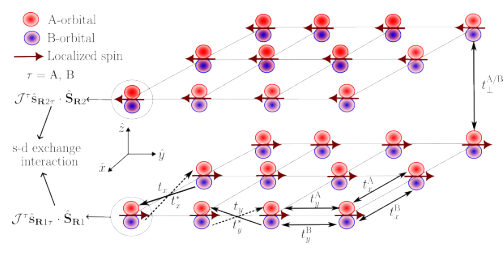
<figcaption class="paper-figure-caption"><b>Fig 1.</b> FIG. 1. Schematic of the reduced low-energy model for a magnetically ordered CrSBr bilayer. Each layer ℓ= 1, 2 contains two effective orbital sectors, τ = A, B, represent- ing the conduction- and valence-band-edge manifolds, respec- tively. The localized Cr spin ˆSRℓcouples to the electron spin ˆsRℓτ through the orbital-dependent s-d exchange interaction −J τˆsRℓτ · ˆSRℓ. The parameters tτ x and tτ y describe intralayer hopping along the crystallographic a and b directions, respec- tively, while tτ ⊥denotes spin-conserving interlayer hopping between equivalent orbital sectors. The interorbital hoppings are denoted by tx and ty, with tx = 0 and ty = igy/2. Red and blue circles represent the...</figcaption>
</figure>
<figure class="paper-figure-card">
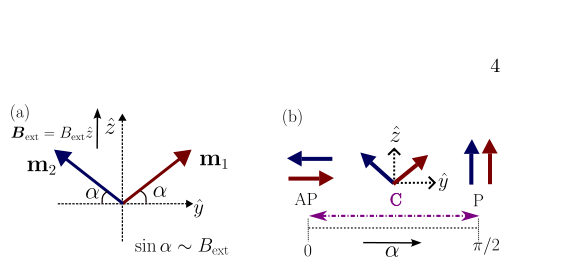
<figcaption class="paper-figure-caption"><b>Fig 2.</b> FIG. 2. Field-induced canting of the ordered moments in a CrSBr bilayer for an applied magnetic field Bext ∥c. (a) Definition of the symmetric canting configuration. The ordered moment directions m1 and m2 have antiparallel components along the magnetic easy axis b and equal components along the applied-field direction c. The canting angle α is measured from the b axis. (b) Evolution of the magnetic configuration from the AFM state at α = 0, through the canted regime, to the field-polarized state at α = π/2. AP and P denote antiparallel and parallel layer-moment configurations, respectively.</figcaption>
</figure>
<figure class="paper-figure-card">
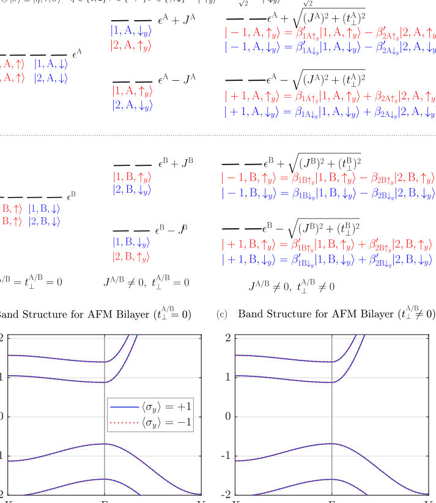
<figcaption class="paper-figure-caption"><b>Fig 3.</b> FIG. 3. Single-particle states and band structure of the interlayer antiferromagnetic bilayer at α = 0. (a) Evolution of the Γ-point states as the orbital-dependent exchange and interlayer hopping are introduced. The left column shows the layer-degenerate states for Jτ = tτ ⊥= 0; the middle column shows the layer-staggered exchange splitting for Jτ ̸= 0 and tτ ⊥= 0; and the right column shows the hybridized states for finite Jτ and tτ ⊥, with τ = A, B. In this case, the exchange term −ηz ⊗Jorb ⊗σy produces opposite Zeeman-like shifts in the two layers. For a fixed σy eigenvalue, interlayer hopping therefore couples layer states separated in energy by 2|Jτ|. The wave functions mix to first...</figcaption>
</figure>
<figure class="paper-figure-card">
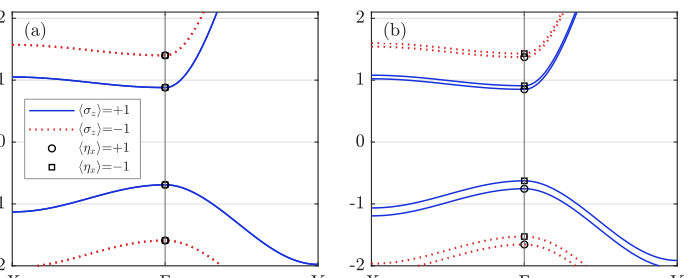
<figcaption class="paper-figure-caption"><b>Fig 4.</b> FIG. 4. Single-particle states and band structure of the field-polarized interlayer-ferromagnetic bilayer at α = π/2. (a) Evolution of the Γ-point states as the orbital-dependent exchange and interlayer hopping are introduced. The left column shows the layer-degenerate states for Jτ = tτ ⊥= 0; the middle column shows the exchange-split states for Jτ ̸= 0 and tτ ⊥= 0; and the right column shows the bonding and antibonding states for finite Jτ and tτ ⊥, with τ = A, B. In this case, the exchange term −η0 ⊗Jorb ⊗σz produces the same Zeeman-like shift in both layers. Consequently, for a fixed σz eigenvalue, the two layer states are degenerate before interlayer hopping is introduced....</figcaption>
</figure>
<figure class="paper-figure-card">
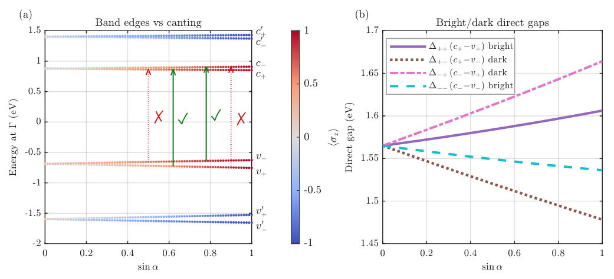
<figcaption class="paper-figure-caption"><b>Fig 5.</b> FIG. 5. Evolution of the Γ-point band edges and direct gaps along the symmetric c-axis canting trajectory. The horizontal coordinate is B = sin α = Bext/Bsat below saturation. (a) Band-edge energies calculated from Eq. (25). Each band is labeled by its spin-resolved layer-parity (SRLP) eigenvalue λ = ±1, and the color scale represents ⟨σz⟩. At B = 0, the exchange field is layer staggered and directed along y, and the bands form exactly degenerate SRLP partner pairs within the reduced Hamiltonian. At B = 1, the exchange field is layer uniform and directed along z, and the states have definite σz. At intermediate canting, spin and layer parity are separately mixed, while SRLP remains...</figcaption>
</figure>
</div>

<p><strong>Summary.</strong> This paper introduces a generalized s-d model to unify the description of magnetism, itinerant carriers, and excitons in layered magnetic semiconductors like $    ext{CrSBr}$. By analyzing the system's response across different magnetic field regimes, the authors predict specific excitonic states and provide a guiding principle based on conserved quantum numbers for understanding these complex magneto-optic effects.</p>
<p><strong>Why it may be interesting.</strong> The explicit inclusion of magnetic order into the exciton physics via the s-d model provides a powerful theoretical tool for understanding magneto-optics, which bridges condensed matter theory with quantum optics.</p>
<details>
<summary>Detailed structure</summary>
<p><strong>Main problem.</strong> To develop a unified, analytically tractable minimal model describing the interplay between magnetic order, itinerant electrons, and excitons in layered magnetic semiconductors.</p>
<p><strong>Main result.</strong> The model successfully captures the coupling between magnetic order and excitonic phenomena, providing a framework to understand magneto-optic responses in these materials.</p>
<p><strong>Method.</strong> The authors employ a generalized s-d model Hamiltonian, reducing it for magnetically ordered states and analyzing the resulting electronic structure and exciton binding energies.</p>
<p><strong>Model / system.</strong> The study focuses on layered van der Waals magnetic semiconductors, using $ ext{CrSBr}$ bilayer as a case study. The model incorporates magnetic order, electron/hole dynamics, and excitons via an extended Hamiltonian.</p>
<p><strong>Key observables.</strong> Bright and dark excitonic states, optical selection rules (conservation of a spin/layer pseudospin quantum number), and exciton binding energy.</p>
<p><strong>Important parameters / regimes.</strong> Magnetic canting angle ($\alpha$), hopping amplitudes ($t_{	au x}, t_{	au y}, t_{	au \perp}$), and onsite exchange couplings.</p>
<p><strong>Assumptions / limitations.</strong> The localized-spin operators are replaced by their expectation values for a magnetically ordered state, and the analysis often relies on a two-channel exciton model approximation.</p>
<p><strong>Figures summary.</strong> Figure 1 schematically shows the reduced low-energy model for $    ext{CrSBr}$ bilayer. Figure 2 summarizes the field-driven evolution of magnetic order (AFM $    o$ Canted $ o$ FM). Figure 7(b) plots layer probabilities.</p>
<p><strong>Paper structure.</strong> The paper progresses by first establishing the unified Hamiltonian, then analyzing the electronic structure evolution under magnetic field canting using symmetry principles (SRLP), and finally calculating the resulting Wannier-Mott exciton properties and binding energies.</p>
</details>
<details>
<summary>Abstract</summary>
<p>The recent discovery of excitons coupled to the magnetic order, and the consequent strong magneto-optic responses, in some van der Waals magnetic semiconductors has triggered intense activity at the interface of magnetism and semiconductor optics. Here, we present an analytically tractable minimal model that describes magnetic order, electrons, holes, and excitons within a unified framework, thereby capturing a wide range of phenomena. It treats the magnetic order and itinerant carriers to be comprised by distinct electronic orbitals that are mutually coupled via orbital-dependent onsite exchange, similar to the treatment of metallic magnets using an s-d model. Investigating CrSBr bilayer as a case study, we benchmark our model and its predictions against recent experimental and ab-initio results finding good agreement as well as new insights enabled by the model's simplicity. Examining the optical selection rules, we find the conservation of a quantum number formed from a combination of spin and layer pseudospin to be a useful guiding principle, even in noncollinear magnetic configurations. Our analysis finds a series of bright and dark excitonic states in such layered A-type antiferromagnets. The presented framework should be valuable in achieving intuitive understanding of recently discovered excitonic phenomena and guiding the discovery of other excitonic states in layered magnetic semiconductors.</p>
</details>
<p><sub><a href="#top">↑ back to top</a></sub></p>

<p><a id="paper-2609.03073"></a></p>
<h3 id="optimized-matrix-product-state-simulations-of-quantum-error-correction-circuits"><a href="http://arxiv.org/abs/2609.03073v1">Optimized Matrix-Product State Simulations of Quantum Error Correction Circuits</a></h3>
<p><strong>Authors:</strong> Asier Piñeiro Orioli, Chen Zhao, Guido Masella, Tommaso Macrì, Hengyun Zhou, Shannon Whitlock<br>
<strong>Type:</strong> theory · <strong>Category:</strong> quantum information and computing · <strong>PDF:</strong> <a href="https://arxiv.org/pdf/2609.03073v1">https://arxiv.org/pdf/2609.03073v1</a><br>
<strong>Analysis basis:</strong> full PDF text, analyzed in chunks
<strong>Topic relevance:</strong> <code>methods for driven-dissipative</code> <strong>1/5</strong></p>
<div class="figure-strip-hint">↔ Scroll figures horizontally</div>
<div class="paper-figures-scroll">
<figure class="paper-figure-card">
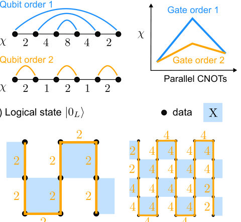
<figcaption class="paper-figure-caption"><b>Fig 1.</b> FIG. 1. (a) The “rainbow” problem: entanglement shared across widely separated qubit pairs requires large bond di- mensions under a naive ordering, but a simple reordering en- forces nearest-neighbor connectivity and reduces χmax to 2. (b) “The mountain” problem: two orderings of a commuting gate set produce identical final states but very different peaks in bond dimension during the circuit. (c) Optimal snake or- dering for the state |0L⟩of the rotated surface code for d = 3 and 5. Light-blue squares represent the X stabilizers of |0L⟩; the orange line represents the MPS qubit chain. The number next to each link gives the bond dimension χi, determined by the number of stabilizers cut at...</figcaption>
</figure>
<figure class="paper-figure-card">
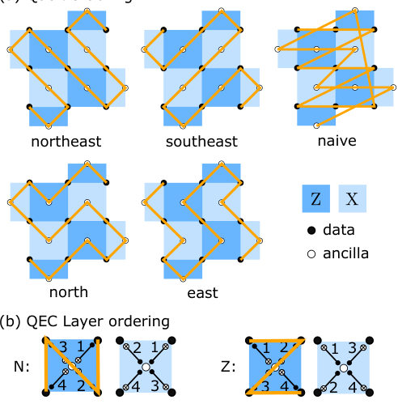
<figcaption class="paper-figure-caption"><b>Fig 2.</b> FIG. 2. Parameter choices for memory circuit. (a) qubit-order options. The orange line in (a) represents the 1D MPS, where each qubit is a tensor. (b) qec-layer-order options. Each of the 4 QEC layers, k ∈{1, 2, 3, 4}, consists of all CNOTs be- tween each stabilizer ancilla and the data qubit in the direc- tion indicated by k. The orange line in (b) is just a visual aid.</figcaption>
</figure>
<figure class="paper-figure-card">
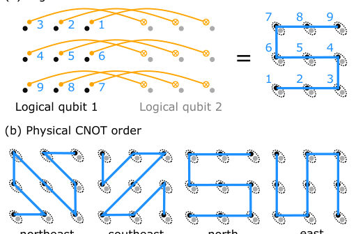
<figcaption class="paper-figure-caption"><b>Fig 3.</b> FIG. 3. (a) Transversal logical CNOT between two logical qubits. The order of physical CNOTs given by the blue num- bers is represented by a snake on the right (corresponding to north). (b) Parameter choices for the cnotL-cnot-order pa- rameter. The indices grow in the compass direction indicated by the name.</figcaption>
</figure>
<figure class="paper-figure-card">
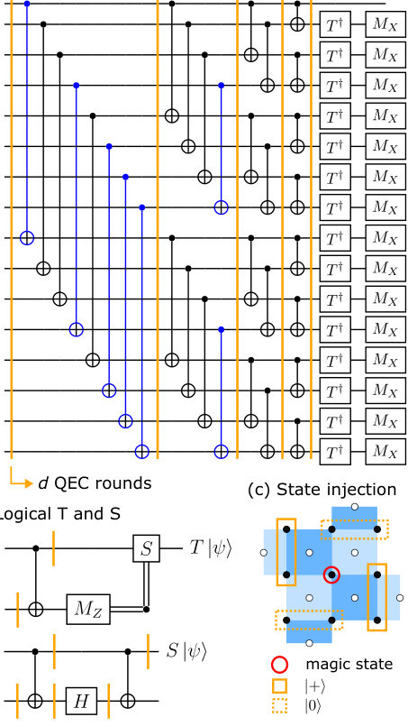
<figcaption class="paper-figure-caption"><b>Fig 4.</b> FIG. 4. (a) 15-to-1 magic state distillation circuit from Ref. [75]. The blue CNOTs act trivially on the state and can be removed. (b) Implementation of T gates through teleportation with an ancilla prepared in the magic state |AL⟩= (|0L⟩+ eiπ/4 |1L⟩)/ √</figcaption>
</figure>
<figure class="paper-figure-card">
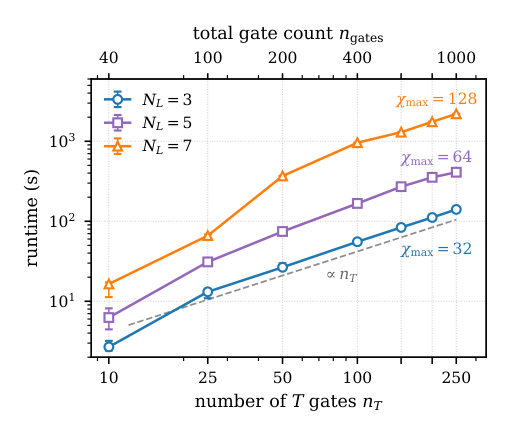
<figcaption class="paper-figure-caption"><b>Fig 5.</b> FIG. 5. Mean runtimes from random circuits with NL ∈ {3, 5, 7} logical qubits encoded in a d = 3 rotated surface code (). Every qubit starts in either |0⟩or |+⟩with 50% probability. ngates random gates drawn from {H, S, T, CNOT} are applied with: nT = ngates/4 T gates, and pCNOT = 0.5, pH = pS = 0.25 for the remaining 3ngates/4 gates. The bond dimension at the logical level saturates to the maximum of 2⌊NL/2⌋and at the physical level it is multiplied by 16.</figcaption>
</figure>
</div>

<p><strong>Summary.</strong> This paper shows that Matrix Product States (MPS) can efficiently simulate complex Quantum Error Correction (QEC) circuits, even those containing non-Clifford gates. The key finding is that simulation efficiency hinges not on the circuit itself, but on sophisticated, circuit-level optimizations like reordering qubits and gates. These optimizations can reduce resource requirements by orders of magnitude, positioning MPS as a vital tool for fault-tolerant quantum simulation.</p>
<p><strong>Why it may be interesting.</strong> The focus on optimizing tensor network representations for QEC circuits provides a powerful, resource-aware simulation tool that complements existing near-Clifford simulators, which is highly relevant for understanding resource scaling in quantum computation.</p>
<details>
<summary>Detailed structure</summary>
<p><strong>Main problem.</strong> The primary challenge is simulating large-scale Quantum Error Correction (QEC) circuits, especially those involving non-Clifford gates, to advance fault-tolerant quantum computing.</p>
<p><strong>Main result.</strong> The authors demonstrate that Matrix Product State (MPS) techniques can simulate complex QEC circuits, including large magic-state distillation, efficiently by employing targeted circuit-level optimizations.</p>
<p><strong>Method.</strong> The work utilizes MPS tensor network methods to represent and simulate quantum states and gates, focusing heavily on optimizing the sequence of qubits and gates to minimize the required bond dimension.</p>
<p><strong>Model / system.</strong> The model involves simulating various QEC circuits, such as the rotated surface code and magic-state distillation, which are represented by stabilizer states and are analyzed using MPS formalism.</p>
<p><strong>Key observables.</strong> Bond dimensions ($\chi_{\max}$), simulation time, and fidelity of the simulated logical states.</p>
<p><strong>Important parameters / regimes.</strong> Circuit distance ($d$), number of physical qubits (up to 187), and the specific ordering choices (e.g., 'northeast' vs 'naive').</p>
<p><strong>Assumptions / limitations.</strong> The efficiency of MPS is critically dependent on finding the optimal qubit and gate ordering, which is computationally difficult.</p>
<p><strong>Figures summary.</strong> Figures illustrate the impact of ordering choices (e.g., 'rainbow' and 'mountain' problems), showing how reordering qubits or gates drastically reduces the maximal bond dimension required for simulation.</p>
<p><strong>Paper structure.</strong> The paper progresses by first establishing the necessity of simulating non-Clifford QEC circuits, then introducing MPS as the tool, and finally detailing specific optimizations (qubit/gate ordering) and benchmarking these optimizations on increasingly complex circuits (surface code, distillation).</p>
</details>
<details>
<summary>Abstract</summary>
<p>Simulating quantum error correction (QEC) circuits including non-Clifford gates at scale is important to accelerate progress toward fault-tolerant quantum computing. Here we demonstrate that matrix product state (MPS) techniques can handle many QEC circuits exactly and without restriction on gate types. Crucially, we find that MPS efficiency depends sensitively on implementation choices, and we introduce a series of targeted optimizations that reduce bond dimensions and simulation time by several orders of magnitude compared to naive approaches. We illustrate this with examples including: (a) a rotated surface code quantum memory up to distance 11, (b) logical Bell-state preparation up to distance 9, (c) a 15-to-1 magic-state distillation circuit including hundreds of QEC rounds that we optimize to be simulated with only 11 logical qubits (187 physical qubits) and a maximal bond dimension of 64 in under 40 seconds, and (d) a narrow, deep random circuit that scales linearly with the number of T gates. These results demonstrate the importance of circuit-level optimizations and position MPS as a valuable complement to near-Clifford simulators for QEC circuits.</p>
</details>
<p><sub><a href="#top">↑ back to top</a></sub></p>

<p><a id="paper-2609.04165"></a></p>
<h3 id="parameterised-graph-theory-for-tensor-networks-entanglement-rerouting-structural-simplification-and-agnostic-tomography"><a href="http://arxiv.org/abs/2609.04165v1">Parameterised graph theory for tensor networks: entanglement rerouting, structural simplification, and agnostic tomography</a></h3>
<p><strong>Authors:</strong> Matthias C. Caro, Natalie McHugh, Sergii Strelchuk<br>
<strong>Type:</strong> theory · <strong>Category:</strong> numerical methods · <strong>PDF:</strong> <a href="https://arxiv.org/pdf/2609.04165v1">https://arxiv.org/pdf/2609.04165v1</a><br>
<strong>Analysis basis:</strong> full PDF text, analyzed in chunks
<strong>Topic relevance:</strong> <code>methods for driven-dissipative</code> <strong>1/5</strong></p>
<div class="figure-strip-hint">↔ Scroll figures horizontally</div>
<div class="paper-figures-scroll">
<figure class="paper-figure-card">
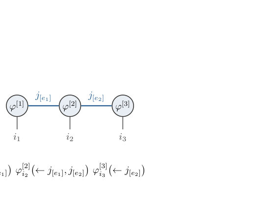
<figcaption class="paper-figure-caption"><b>Fig 1.</b> Figure 4: Contracting a tensor network. Left: a weighted path graph G on three vertices with edges e1 = {1, 2} and e2 = {2, 3}. Right: compatible tensors φ[v], one per vertex, with a shared virtual index j[e] of range w(e) for each edge e and one physical index iv per vertex. The amplitude ψi1,i2,i3 is obtained by summing over all virtual indices, as in the displayed instance of Equation (2.10).</figcaption>
</figure>
<figure class="paper-figure-card">
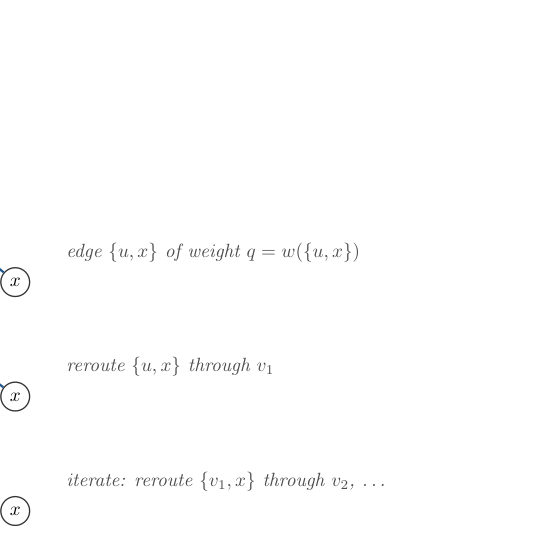
<figcaption class="paper-figure-caption"><b>Fig 2.</b> Figure 5: Rerouting along a path. An edge {u, x} can be rerouted through successive intermediate vertices. The example shows three such vertices. Each step removes the current long edge and multiplies the weights of the two carrying edges by q.</figcaption>
</figure>
<figure class="paper-figure-card">
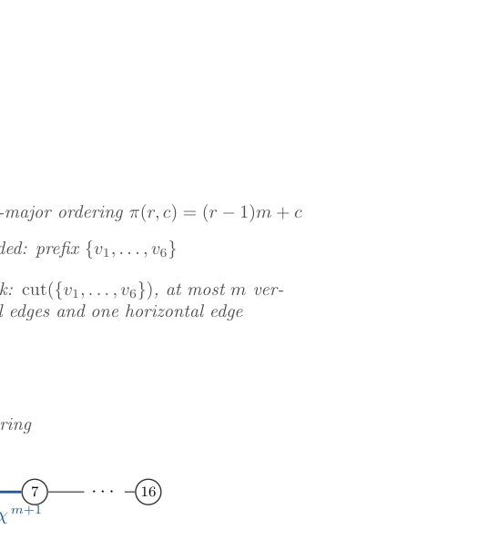
<figcaption class="paper-figure-caption"><b>Fig 3.</b> Figure 6: Rerouting a square grid to a path, shown for m = 4. Panel (a): the row-major ordering π(r, c) = (r −1)m+c of the m×m grid, with the prefix {v1, . . . , v6} shaded and its prefix cut highlighted, consisting of m vertical edges and one horizontal edge. Panel (b): the resulting path on m2 vertices. Each MPS bond carries the product of the virtual dimensions of the grid edges crossing the corresponding prefix cut, here at most χm+1 on the bond {v6, v7}.</figcaption>
</figure>
</div>

<p><strong>Summary.</strong> This paper uses parameterised graph theory to analyze the structural constraints governing Tensor Network States (TNSs). It proves that graph parameters like cutwidth bound the required bond dimensions for efficient representations (MPS/TTN). Crucially, it derives complexity bounds for state tomography, providing a theoretical roadmap for learning and characterizing complex quantum states.</p>
<p><strong>Why it may be interesting.</strong> This work provides rigorous, graph-theoretic tools to quantify the computational cost associated with simulating or characterizing quantum states, which is crucial for understanding the limits of quantum simulation algorithms.</p>
<details>
<summary>Detailed structure</summary>
<p><strong>Main problem.</strong> The paper aims to characterize the structural graph parameters that determine the computational tractability of representing quantum states as Tensor Networks (TNSs) and to bound the complexity of learning these states.</p>
<p><strong>Main result.</strong> It establishes that graph parameters like cutwidth and tree-cutwidth bound the bond dimension overhead for MPS/TTN representations, and derives explicit graph-dependent complexity bounds for state tomography.</p>
<p><strong>Method.</strong> The authors employ Parameterised Graph Theory, introducing the concept of 'entanglement rerouting' as a tensor-network analogue to analyze structural dependencies.</p>
<p><strong>Model / system.</strong> The focus is on quantum states represented by Tensor Networks (TNSs) on a graph $G$, which encode the entanglement structure of the quantum system.</p>
<p><strong>Key observables.</strong> Bond dimension, sample and computational complexity of tomography, and fidelity of state reconstruction.</p>
<p><strong>Important parameters / regimes.</strong> Cutwidth ($ ext{cw}(G)$), Tree-cutwidth ($   ext{tcw}(G)$), and a new 'learning complexity' parameter.</p>
<p><strong>Assumptions / limitations.</strong> The work extends its analysis to the 'agnostic setting,' allowing it to handle input states that might not perfectly belong to the restricted class of representable TNSs.</p>
<p><strong>Figures summary.</strong> Figure 1 illustrates classical information rerouting, while Figure 2 illustrates the tensor-network analogue, 'Entanglement rerouting,' showing how virtual indices can be rerouted through an intermediate vertex.</p>
<p><strong>Paper structure.</strong> The paper first introduces entanglement rerouting and proves bounds relating cutwidth/tree-cutwidth to MPS/TTN bond dimensions. It then derives complexity bounds for realizable TNS tomography and finally extends the framework to agnostic tomography for arbitrary input states.</p>
</details>
<details>
<summary>Abstract</summary>
<p>Parameterised graph theory studies how the complexity of graph-theoretic problems depends on structural parameters of the input graph. This perspective has proved useful in analysing tensor-network simulation (Markov and Shi, 2008). Its implications for tensor-network representations and tomography are less well understood. In particular, which graph parameters determine whether a tensor-network state (TNS) admits a tractable matrix product state (MPS) or tree tensor network (TTN) representation, and which control the complexity of learning the state?   We address these questions using parameterised graph theory. First, we show that cutwidth and tree-cutwidth bound the bond dimension overhead required to represent a TNS as an MPS or TTN. In the TTN case, tree-cutwidth also bounds the local dimension of the grouped subsystems. The proofs are based on entanglement rerouting, a tensor-network analogue of rerouting information in a classical network. Second, we derive graph-dependent upper bounds on the sample and computational complexity of realisable TNS tomography, with exponents that depend on cutwidth, tree-cutwidth, and a new graph parameter, learning complexity, which we bound in terms of degree and treewidth. We obtain these results by extending the disentangling MPS learner of (Cramer et al., 2010), as analysed further in (Bakshi et al., 2025; Lin et al., 2025), to TTNs and to tensor networks on arbitrary known graphs. Finally, we extend the framework beyond the realisable setting. For an arbitrary input state, our agnostic learner outputs a pure state whose fidelity is within additive error $ε$ of the optimum over tensor-network states on the given graph with a given bond dimension, with explicit graph-dependent bounds on sample and computational complexity.</p>
</details>
<p><sub><a href="#top">↑ back to top</a></sub></p>

<p><a id="paper-2609.04016"></a></p>
<h3 id="quasi-local-form-for-math669math-math670math-renyi-qnec-from-fixed-ray-escorts"><a href="http://arxiv.org/abs/2609.04016v1">Quasi-local form for $α$--$z$ Rényi QNEC from fixed-ray escorts</a></h3>
<p><strong>Authors:</strong> Tanay Kibe, Pratik Roy<br>
<strong>Type:</strong> theory · <strong>Category:</strong> other · <strong>PDF:</strong> <a href="https://arxiv.org/pdf/2609.04016v1">https://arxiv.org/pdf/2609.04016v1</a><br>
<strong>Analysis basis:</strong> full PDF text, analyzed in chunks
<strong>Topic relevance:</strong> <code>Keldysh / 2PI / non-Gaussian methods</code> <strong>1/5</strong></p>
<div class="figure-strip-hint">↔ Scroll figures horizontally</div>
<div class="paper-figures-scroll">
<figure class="paper-figure-card">
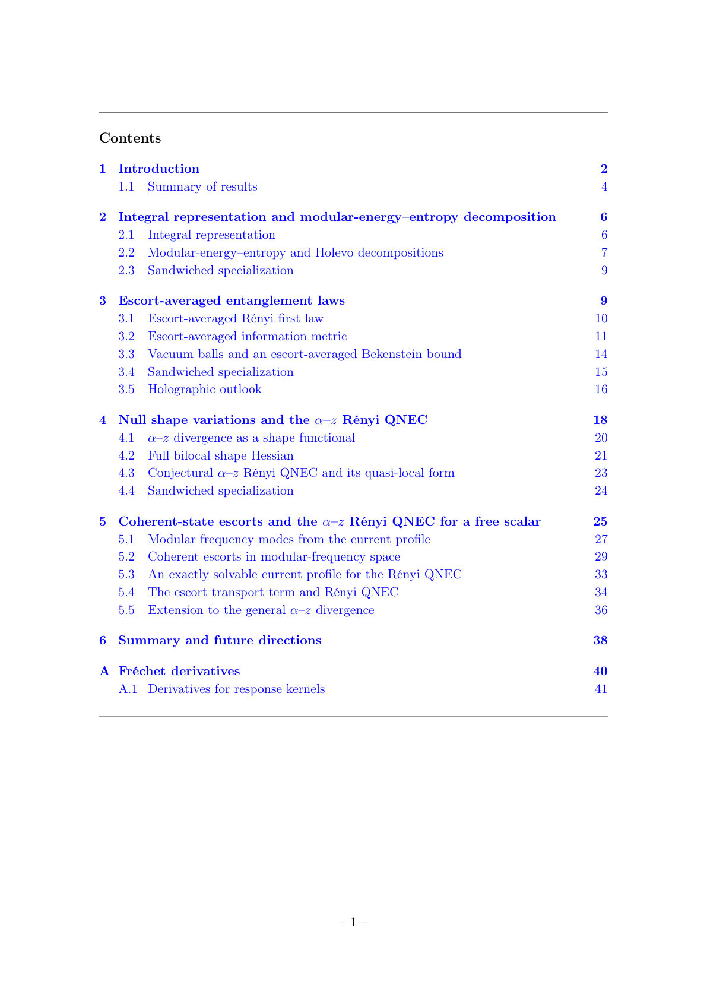
<figcaption class="paper-figure-caption"><b>Fig 1.</b> Low-resolution page preview, page 2</figcaption>
</figure>
<figure class="paper-figure-card">
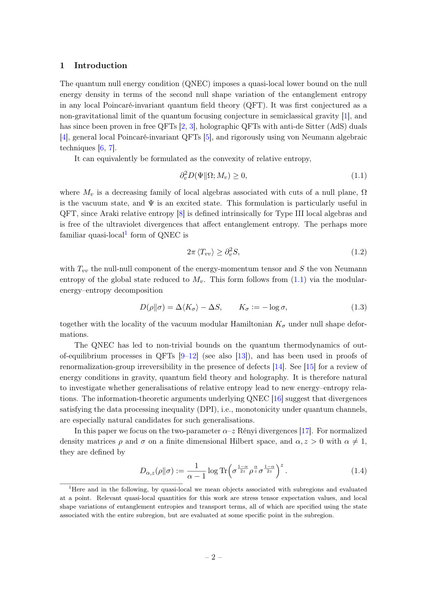
<figcaption class="paper-figure-caption"><b>Fig 2.</b> Low-resolution page preview, page 3</figcaption>
</figure>
<figure class="paper-figure-card">
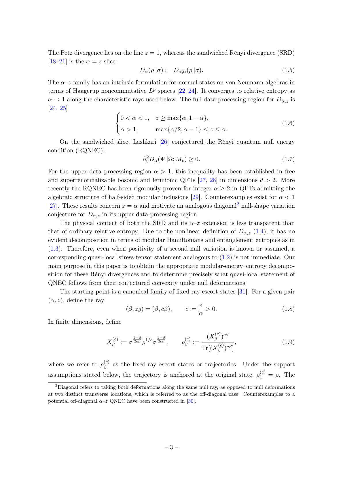
<figcaption class="paper-figure-caption"><b>Fig 3.</b> Low-resolution page preview, page 4</figcaption>
</figure>
<figure class="paper-figure-card">
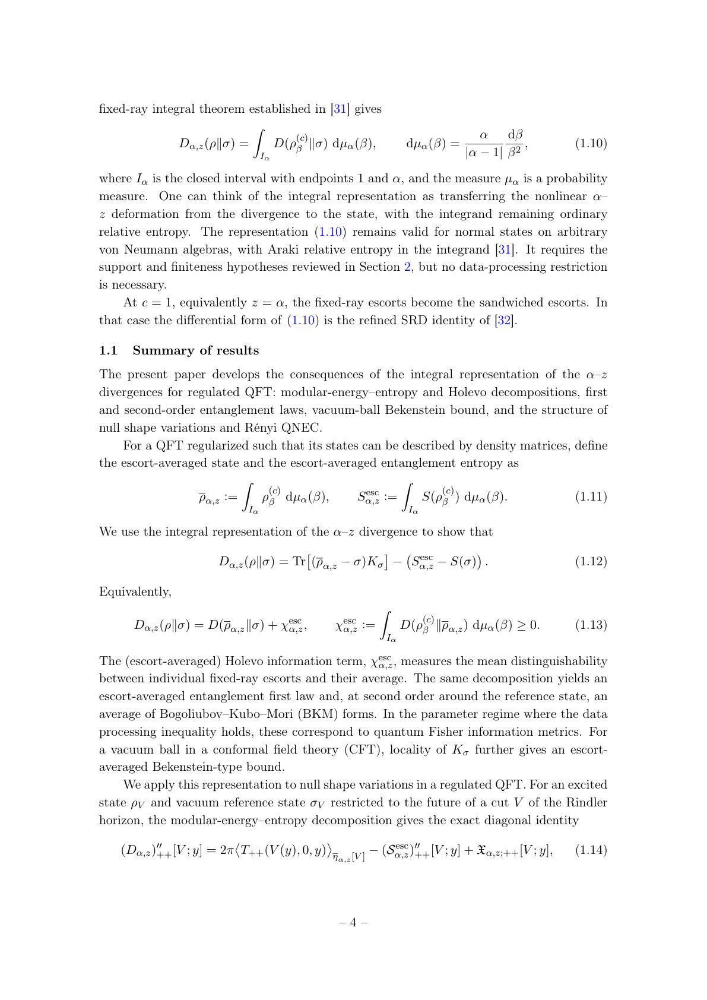
<figcaption class="paper-figure-caption"><b>Fig 4.</b> Low-resolution page preview, page 5</figcaption>
</figure>
<figure class="paper-figure-card">
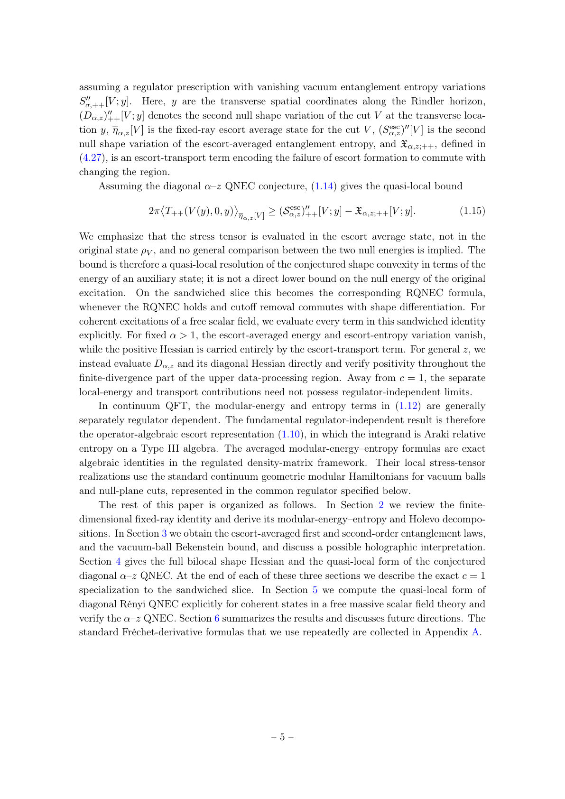
<figcaption class="paper-figure-caption"><b>Fig 5.</b> Low-resolution page preview, page 6</figcaption>
</figure>
</div>

<p><strong>Summary.</strong> This theoretical paper develops a quasi-local formulation for the $\alpha$-$z$ Rényi Quantum Null Energy Condition (QNEC) by employing fixed-ray escort states. It derives an escort-averaged entanglement first law and successfully verifies the QNEC for coherent excitations in a free scalar field. The work provides a sophisticated link between quantum information theory and fundamental energy constraints in QFT.</p>
<p><strong>Why it may be interesting.</strong> The work connects fundamental energy conditions (QNEC) from general relativity/QFT to quantum information measures (Rényi entropy) via novel mathematical tools (escort averaging), which is highly relevant for understanding quantum constraints in curved spacetime or holographic settings.</p>
<details>
<summary>Detailed structure</summary>
<p><strong>Main problem.</strong> The paper aims to derive a quasi-local form for the $\alpha$-$z$ Rényi Quantum Null Energy Condition (QNEC) using fixed-ray escort states.</p>
<p><strong>Main result.</strong> A quasi-local form for the $\alpha$-$z$ QNEC is obtained, which is verified for coherent excitations in a free scalar field theory, confirming the conjectured diagonal QNEC for this family.</p>
<p><strong>Method.</strong> The analysis employs the fixed-ray escort integral representation for Rényi divergence and utilizes modular-energy–entropy decompositions, alongside Fréchet differentiation for variations.</p>
<p><strong>Model / system.</strong> The study is set in the context of Quantum Field Theories (QFTs), analyzing subregions and null deformations, with explicit calculations performed for free scalar field theory using coherent states.</p>
<p><strong>Key observables.</strong> $\alpha$-$z$ Rényi divergence, escort-averaged entanglement entropy ($S_{\text{esc}}^{\alpha,z}$), null energy density expectation value ($\langle T_{vv} \rangle$), and the escort-transport term ($X_{\alpha,z;++}$).</p>
<p><strong>Important parameters / regimes.</strong> The parameters $\alpha$ and $z$ govern the Rényi divergence, and the analysis is sensitive to the specific choice of the fixed ultraviolet regulator.</p>
<p><strong>Assumptions / limitations.</strong> The derivation relies on the fixed-ray escort integral representation, and the resulting bound is a quasi-local resolution based on an auxiliary state, not a direct lower bound on the original null energy.</p>
<p><strong>Paper structure.</strong> The paper proceeds by establishing the fixed-ray escort representation, deriving the modular-energy–entropy decomposition, and then applying these tools to derive the quasi-local QNEC, culminating in explicit calculations for the free scalar field coherent state family.</p>
</details>
<details>
<summary>Abstract</summary>
<p>The fixed-ray escort integral representation expresses $α$--$z$ Rényi divergence as an average over ordinary relative entropy of a family of escort states. Working in the standard UV-regulated density-matrix description of QFT subregions, we use this representation to derive an escort-averaged entanglement first law, an escort-averaged representation of the $α$--$z$ information kernel, and an escort-averaged Bekenstein-type bound for ball-shaped regions in conformal field theories. For the conjectural $α$--$z$ quantum null energy condition (QNEC), we obtain a quasi-local form in which the null energy is evaluated in an escort-averaged state and is corrected by an escort-transport term encoding the failure of escort formation to commute with restriction to a null-deformed region. The $z=α$ specialization gives a similar quasi-local form of the Rényi QNEC for sandwiched Rényi divergence. We explicitly compute the Rényi QNEC, including the explicit escort transport term, for coherent-state excitations in a free scalar field theory. For the same coherent family, we obtain a positive $α$--$z$ null Hessian, verifying the conjectured diagonal $α$--$z$ QNEC for this family.</p>
</details>
<p><sub><a href="#top">↑ back to top</a></sub></p>

<p><a id="paper-2609.03124"></a></p>
<h3 id="relativistic-transformation-of-temperature-for-exotic-cosmological-fluids"><a href="http://arxiv.org/abs/2609.03124v1">Relativistic transformation of temperature for exotic cosmological fluids</a></h3>
<p><strong>Authors:</strong> Soroor Pouryazdan, Babak Vakili<br>
<strong>Type:</strong> theory · <strong>Category:</strong> statistical mechanics · <strong>PDF:</strong> <a href="https://arxiv.org/pdf/2609.03124v1">https://arxiv.org/pdf/2609.03124v1</a><br>
<strong>Analysis basis:</strong> full PDF text, analyzed in chunks
<strong>Topic relevance:</strong> <code>Keldysh / 2PI / non-Gaussian methods</code> <strong>1/5</strong></p>
<div class="figure-strip-hint">↔ Scroll figures horizontally</div>
<div class="paper-figures-scroll">
<figure class="paper-figure-card">
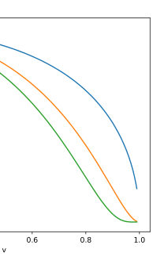
<figcaption class="paper-figure-caption"><b>Fig 1.</b> Figure 1: Relativistic temperature ratio T ′/T versus the relative velocity v for barotropic fluids with negative EoS parameter. Curves correspond to w = −1/3, w = −2/3, and w = −0.9.</figcaption>
</figure>
<figure class="paper-figure-card">
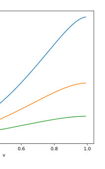
<figcaption class="paper-figure-caption"><b>Fig 2.</b> Figure 2: Relativistic temperature ratio T ′/T as a function of the relative velocity v for the Chaplygin gas with α = 1. Different curves correspond to different background energy densities ρ, illustrating the density-dependent nature of the temperature transformation.</figcaption>
</figure>
</div>

<p><strong>Summary.</strong> This paper analyzes the relativistic transformation of temperature for exotic cosmological fluids, contrasting the behavior of simple barotropic fluids with those exhibiting complex, density-dependent equations of state like the Chaplygin gas. Using covariant thermodynamics, it shows that negative pressure can suppress temperature growth under boosts, while other models exhibit distinct, non-linear increases in transformed temperature.</p>
<p><strong>Why it may be interesting.</strong> While focused on cosmology, the rigorous application of relativistic thermodynamics and the study of non-equilibrium state transformations (like temperature under boosts) provides general theoretical tools applicable to non-equilibrium quantum systems.</p>
<details>
<summary>Detailed structure</summary>
<p><strong>Main problem.</strong> The paper investigates how the temperature of exotic cosmological fluids, particularly those with negative pressure, transforms under relativistic Lorentz boosts.</p>
<p><strong>Main result.</strong> The transformation behavior differs significantly between barotropic fluids (where negative pressure suppresses temperature growth) and Chaplygin gases (which show a monotonic increase in transformed temperature with velocity).</p>
<p><strong>Method.</strong> The analysis employs a covariant thermodynamic framework, deriving temperature transformations by applying Lorentz boosts to the energy-momentum tensor and using operational definitions of temperature.</p>
<p><strong>Model / system.</strong> The study models effective cosmological fluids, specifically barotropic fluids ($p=w
ho$) and generalized Chaplygin gases ($p=-A/
ho^\alpha$). These models are used to represent dark energy or exotic matter components in cosmology.</p>
<p><strong>Key observables.</strong> The transformed temperature ($T'$) and the ratio $T'/T$ as functions of relative velocity ($v$) and background energy density ($
ho$).</p>
<p><strong>Important parameters / regimes.</strong> The equation-of-state parameter ($w$), the coupling constant ($A$), and the background energy density ($
ho$) are crucial parameters determining the fluid's behavior.</p>
<p><strong>Assumptions / limitations.</strong> The analysis assumes local thermodynamic equilibrium and adiabatic flow for the fluids considered, and acknowledges that temperature is an operationally derived quantity, not a fundamental Lorentz scalar.</p>
<p><strong>Figures summary.</strong> Figure 1 illustrates temperature suppression for barotropic fluids with negative $w$, while Figure 2 shows the monotonic increase of $T'/T$ with velocity for the Chaplygin gas.</p>
<p><strong>Paper structure.</strong> The paper first establishes the framework for barotropic fluids, deriving the transformation law for $T$. It then extends the analysis to the Chaplygin gas, contrasting its density-dependent behavior with the simpler barotropic case, and concludes by summarizing the implications for different cosmological regimes.</p>
</details>
<details>
<summary>Abstract</summary>
<p>We study the relativistic transformation of temperature for effective cosmological fluids with negative pressure within a covariant thermodynamic framework. The Lorentz transformation of temperature is derived for barotropic fluids with $p=wρ$ and for the (generalized) Chaplygin gas with $p=-A/ρ^α$. For barotropic fluids with constant negative equation-of-state parameter, we show that negative pressure suppresses the growth of temperature under relativistic boosts. In contrast, the Chaplygin gas exhibits a qualitatively different behavior due to its density-dependent pressure, leading to a monotonic increase of the transformed temperature with velocity. The dependence of the relativistic temperature on the relative velocity and background energy density is illustrated through representative examples.</p>
</details>
<p><sub><a href="#top">↑ back to top</a></sub></p>

<p><a id="paper-2609.03289"></a></p>
<h3 id="symmetry-breaking-line-defects-embedded-to-a-3d-math707math-critical-bulk"><a href="http://arxiv.org/abs/2609.03289v1">Symmetry-breaking line defects embedded to a 3D $O(N)$ critical bulk</a></h3>
<p><strong>Authors:</strong> Shuai Yang, Liang-dong Hu, Yan Chen, W. Zhu<br>
<strong>Type:</strong> theory · <strong>Category:</strong> statistical mechanics · <strong>PDF:</strong> <a href="https://arxiv.org/pdf/2609.03289v1">https://arxiv.org/pdf/2609.03289v1</a><br>
<strong>Analysis basis:</strong> full PDF text, analyzed in chunks
<strong>Topic relevance:</strong> <code>Keldysh / 2PI / non-Gaussian methods</code> <strong>1/5</strong></p>
<div class="figure-strip-hint">↔ Scroll figures horizontally</div>
<div class="paper-figures-scroll">
<figure class="paper-figure-card">
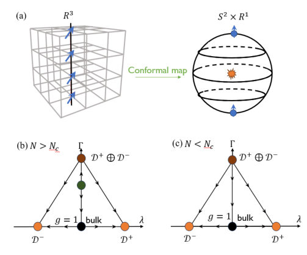
<figcaption class="paper-figure-caption"><b>Fig 1.</b> FIG. 1. (a) Schematic plot of line defect living on 3D crit- ical bulk(left panel) and radial quantization view of line de- fect on Sd−1(right panel). (b-c) RG flows between the bulk fixed point(black dot) and the fixed point of magnetic line defect(orange dot), as well as SSB defect(brown dot). De- pending on the symmetry of the bulk O(N) Wilson–Fisher theory in which the defect is embedded, two distinct RG flow scenarios can arise: (b) corresponds to the case where a par- ticular spontaneous-symmetry-breaking fixed point is stable (N &gt; Nc), while (c) corresponds to the case where this SSB fixed point is unstable (N &lt; Nc). In this work, we assume the SSB defect is the superposition of two...</figcaption>
</figure>
<figure class="paper-figure-card">
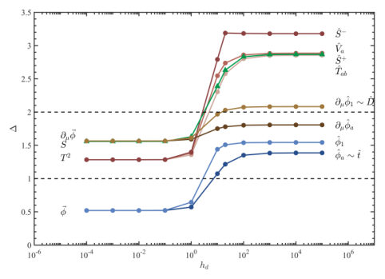
<figcaption class="paper-figure-caption"><b>Fig 2.</b> FIG. 2. Evolution of several low-lying excitation states along the RG flow from the bulk fixed point(hd = 0) to the defect fixed point(hd →∞). For hd ≥100, the extracted scaling dimensions approach stable values, indicating that the sys- tem is already close to the defect conformal fixed point. The results shown here are obtained for the O(3) Wilson–Fisher bulk fixed point on a system with size No = 6.</figcaption>
</figure>
<figure class="paper-figure-card">
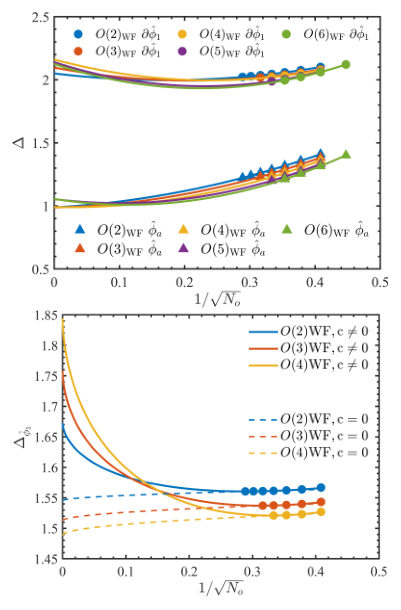
<figcaption class="paper-figure-caption"><b>Fig 3.</b> FIG. 3. The extrapolation for (a) tilt operator ˆϕa, displace- ment operator ∂ˆϕ1 at different bulk O(N = 2 ∼6) Wilson Fisher conformal field theories, and (b) ˆϕ1 at different bulk O(N = 2 ∼4) Wilson Fisher conformal field theories. We use Eq. (25) to obtain the extrapolated values. Using the same data, we also present the fitting results(dashed lines) obtained by including only the correction from the lowest-lying singlet operator(i.e. c = 0).</figcaption>
</figure>
<figure class="paper-figure-card">
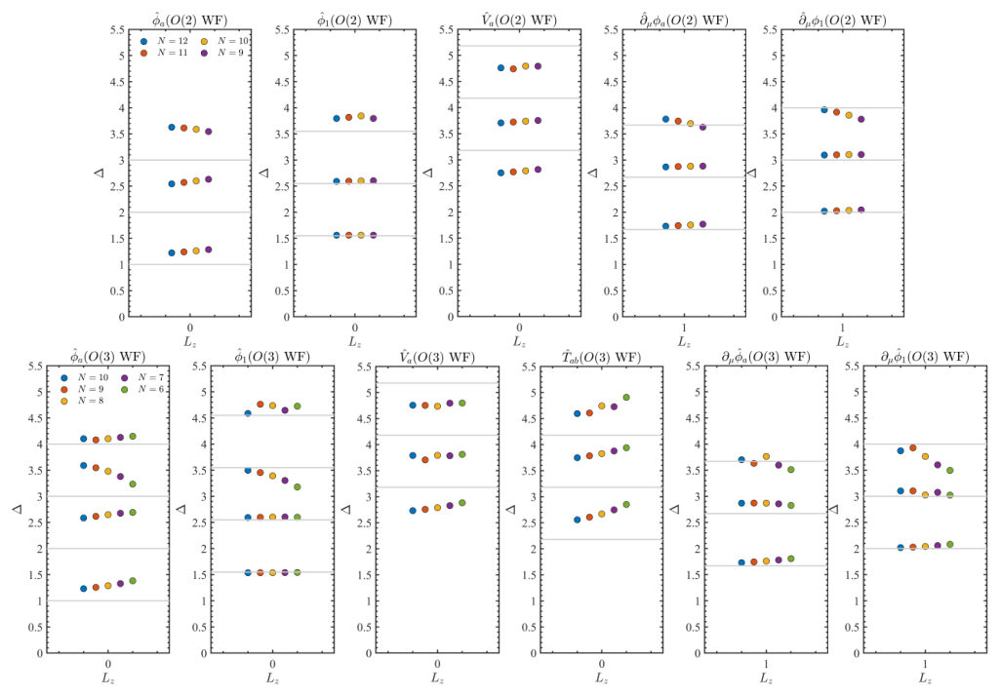
<figcaption class="paper-figure-caption"><b>Fig 4.</b> FIG. 4. Line defect conformal multiplets, we present several lowest O(N −1) singlets ˆϕ1, ∂µ ˆϕ1, vectors ˆϕa, ˆVa, ∂µ ˆϕa and rank-2 tensor ˆTab. The gray horizontal line is taken from the result of the ϵ expansion [37, 40, 49]. These results are produced at hd = 1000 with subject to critical O(N = 2, 3) bulk theories.</figcaption>
</figure>
<figure class="paper-figure-card">
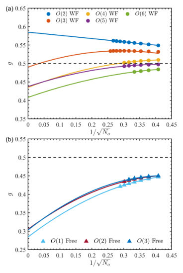
<figcaption class="paper-figure-caption"><b>Fig 5.</b> FIG. 6. The finite size extrapolation of defect g−function at different bulk (a)O(N = 2 ∼6) Wilson Fisher conformal field theories and (b) O(N = 1 ∼3) free scalar theories. We extrapolate to the thermodynamic limit through scaling form of g(No) = g(∞) + aN −1/2 o + bN −1 o .</figcaption>
</figure>
</div>

<p><strong>Summary.</strong> This work theoretically examines the stability of symmetry-breaking line defects embedded in a 3D O(N) critical bulk. Using advanced CFT and RG methods, the authors determine that stable symmetry breaking is only possible when the symmetry dimension N is greater than or equal to 3. This provides a quantitative criterion for defect stability in critical quantum matter.</p>
<p><strong>Why it may be interesting.</strong> The rigorous application of CFT and RG techniques to defect lines in critical systems provides powerful tools for understanding boundary physics, which is relevant to engineered quantum materials or interfaces in AMO physics.</p>
<details>
<summary>Detailed structure</summary>
<p><strong>Main problem.</strong> The paper investigates whether a line defect embedded in a 3D O(N) critical bulk can support a stable spontaneously symmetry-breaking (SSB) defect fixed point, contrasting with known instabilities in 1D systems.</p>
<p><strong>Main result.</strong> A stable SSB defect fixed point is possible only for $N \gtrsim 3$, while for $N < 3$, domain wall proliferation prevents such stability.</p>
<p><strong>Method.</strong> The study employs Defect Conformal Field Theory (dCFT) techniques, utilizing the fuzzy sphere method and Renormalization Group (RG) analysis via the g-function to test stability.</p>
<p><strong>Model / system.</strong> The system models a line defect immersed in a 3D bulk tuned to the O(N) Wilson-Fisher critical point. The stability is analyzed by considering the effect of domain-wall operators and pinning fields.</p>
<p><strong>Key observables.</strong> Scaling dimensions ($\Delta$) of primary operators, the defect $g$-function, and the relevance/irrelevance of the domain-wall operator.</p>
<p><strong>Important parameters / regimes.</strong> The dimensionality $N$ of the symmetry group, and the critical exponents associated with the O(N) Wilson-Fisher universality class.</p>
<p><strong>Assumptions / limitations.</strong> The analysis relies on the fuzzy-sphere regularization technique for general N, and the stability criteria are based on the RG flow analysis of the defect operators.</p>
<p><strong>Figures summary.</strong> Figure 1 schematically compares RG flow diagrams showing stable vs. unstable SSB fixed points based on the value of N relative to a critical value.</p>
<p><strong>Paper structure.</strong> The paper establishes the theoretical framework by contrasting 1D vs. 3D defect stability, then applies the fuzzy sphere technique and RG analysis to the O(N) Wilson-Fisher model, deriving conditions for stable defect fixed points based on N.</p>
</details>
<details>
<summary>Abstract</summary>
<p>While spontaneous breaking of a discrete symmetry in one-dimensional classical systems with short-range interactions is absent, it is expected that a line defect embedded in a bulk criticality exhibits a stable discrete symmetry spontaneous breaking. Here, we investigate the behavior of a pinning-field line defect immersed in a 3D bulk that remains tuned to the $O(N)$ Wilson-Fisher critical point. Employing the fuzzy sphere technique, we provide convincing evidence of the existence of stable defect conformal fixed points, and we demonstrate their renormalization group stability by showing no relevant operator and less effective degrees of freedom than that at bulk fixed point via $g$-function. Moreover, we investigate the defect domain wall operator for various $N$, and we identify that it becomes irrelevance for $N\gtrsim 3$ but it is relevant for $N<3$.These evidence indicate that a one-dimensional defect coupled to a critical bulk cannot support a stable symmetry spontaneously broken defect fixed point due to domain wall proliferation for $N<3$ Wilson-Fisher universality, while in the case of $N \gtrsim 3$ a symmetry broken defect is possible.</p>
</details>
<p><sub><a href="#top">↑ back to top</a></sub></p>

<p><a id="paper-2609.03841"></a></p>
<h3 id="the-casimir-free-energy-of-peptide-films-on-a-silicon-substrate-impact-of-dielectric-to-metal-transition-in-silicon-and-nanoparticles-in-peptide"><a href="http://arxiv.org/abs/2609.03841v1">The Casimir free energy of peptide films on a silicon substrate: Impact of dielectric-to-metal transition in silicon and nanoparticles in peptide</a></h3>
<p><strong>Authors:</strong> G. L. Klimchitskaya, V. M. Mostepanenko<br>
<strong>Type:</strong> theory · <strong>Category:</strong> other · <strong>PDF:</strong> <a href="https://arxiv.org/pdf/2609.03841v1">https://arxiv.org/pdf/2609.03841v1</a><br>
<strong>Analysis basis:</strong> full PDF text, analyzed in chunks
<strong>Topic relevance:</strong> <code>Keldysh / 2PI / non-Gaussian methods</code> <strong>1/5</strong></p>
<div class="figure-strip-hint">↔ Scroll figures horizontally</div>
<div class="paper-figures-scroll">
<figure class="paper-figure-card">
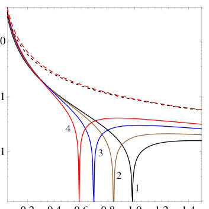
<figcaption class="paper-figure-caption"><b>Fig 1.</b> FIG. 1: Magnitude of the Casimir free energy of peptide coatings containing Φ = 0, 0.1, 0.25, and 0.4 fractions of water deposited on a silicon plate in the dielectric state is shown in the logarithmic scale as a function of peptide film thickness by the solid lines 1, 2, 3, and 4, respectively. The lower and upper dashed lines show the Casimir free energy of peptide films with Φ = 0 and 0.4 fractions of water deposited on a silicon plate in the metallic state, respectively.</figcaption>
</figure>
<figure class="paper-figure-card">
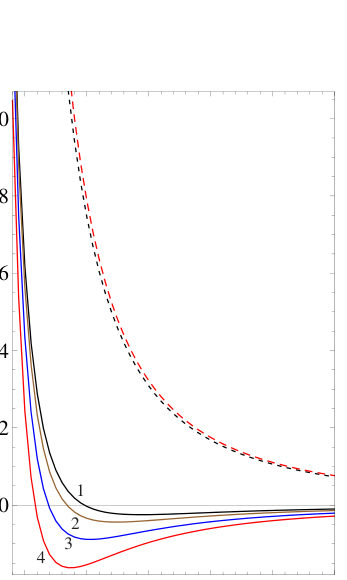
<figcaption class="paper-figure-caption"><b>Fig 2.</b> FIG. 2: The Casimir free energy of peptide coatings containing Φ = 0,0.1, 0.25, and 0.4 fractions of water deposited on a silicon plate in the dielectric state is shown in the natural scale as a function of peptide film thickness by the solid lines 1, 2, 3, and 4, respectively. The lower and upper dashed lines show the Casimir free energy of peptide films with Φ = 0 and 0.4 fractions of water deposited on a silicon plate in the metallic state, respectively.</figcaption>
</figure>
<figure class="paper-figure-card">
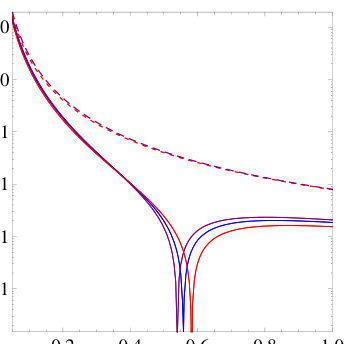
<figcaption class="paper-figure-caption"><b>Fig 3.</b> FIG. 3: Magnitude of the Casimir free energy of peptide coatings containing Φ = 0.4 fraction of water and ϕ = 0,0.03, and 0.05 frac- tions of Au nanoparticles deposited on a silicon plate in the dielec- tric state is shown in the logarithmic scale as a function of peptide film thickness by the three solid lines counted from right to left, re- spectively. The two overlapping dashed lines show the Casimir free energy of peptide films with Φ = 0.4 fraction of water and ϕ = 0 and 0.05 fractions of Au nanoparticles deposited on a silicon plate in the metallic state.</figcaption>
</figure>
<figure class="paper-figure-card">
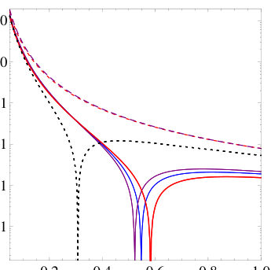
<figcaption class="paper-figure-caption"><b>Fig 4.</b> FIG. 4: Magnitude of the Casimir free energy of peptide coatings containing Φ = 0.4 fraction of water and ϕ = 0,0.03, and 0.05 frac- tions of magnetite nanoparticles of 5 nm radius deposited on a sili- con plate in the dielectric state is shown in the logarithmic scale as a function of peptide film thickness by the three solid lines counted from right to left, respectively. The extreme left dotted line shows the Casimir free energy of peptide film with Φ = 0.4 fraction of wa- ter and ϕ = 0.05 fraction of magnetite nanoparticles of 7.5 nm radius deposited on a silicon plate in the dielectric state. The two overlap- ping dashed lines show the Casimir free energy of peptide films with Φ = 0.4...</figcaption>
</figure>
<figure class="paper-figure-card">

<figcaption class="paper-figure-caption"><b>Fig 5.</b> FIG. 5: The borderline thickness of peptide coating on a silicon plate in the dielectric state, for which the Casimir free energy of peptide film vanishes, is shown as a function of the fraction of water in the peptide film by the lines 1 and 2 for an undoped peptide and doped with the 0.05 fraction of Au nanoparticles, respectively. In the region above each line, the Casimir free energy contributes to the coating stability and below each line makes it less stable.</figcaption>
</figure>
</div>

<p><strong>Summary.</strong> This theoretical work calculates the Casimir free energy for peptide films on silicon, showing that the film's stability depends critically on the substrate's electrical state. The study quantifies how water content and magnetic nanoparticles can tune this stability, offering insights for bioelectronic applications.</p>
<p><strong>Why it may be interesting.</strong> While focused on condensed matter interfaces, the calculation of fluctuation-induced forces (Casimir energy) is a fundamental topic relevant to understanding boundary conditions and interactions in nanoscale quantum systems, bridging quantum electrodynamics with materials science.</p>
<details>
<summary>Detailed structure</summary>
<p><strong>Main problem.</strong> The paper calculates the Casimir free energy of thin peptide films deposited on silicon substrates, investigating how water content, nanoparticles, and substrate phase transitions affect film stability.</p>
<p><strong>Main result.</strong> The film stability is highly dependent on the substrate state: the free energy is negative (stable) for thicker films on dielectric silicon but always positive (less stable) if the silicon is metallic.</p>
<p><strong>Method.</strong> The calculation utilizes the Lifshitz theory of van der Waals and Casimir forces, requiring knowledge of frequency-dependent dielectric permittivities for the constituent materials.</p>
<p><strong>Model / system.</strong> The system is a three-layer structure: vacuum/air, a peptide film (potentially containing water and nanoparticles), and a silicon substrate. The model incorporates the dielectric-to-metal phase transition in silicon.</p>
<p><strong>Key observables.</strong> Casimir free energy ($F_p$) as a function of film thickness ($a$), and the borderline thickness ($a_0$) where $F_p=0$.</p>
<p><strong>Important parameters / regimes.</strong> Film thickness ($a$), volume fraction of water ($\Phi$), presence/type of nanoparticles (magnetic vs. nonmagnetic), and the dielectric state of silicon.</p>
<p><strong>Assumptions / limitations.</strong> The analysis assumes the use of the Lifshitz theory and employs approximations like the Clausius-Mossotti equation for mixing and treating the substrate as a semispace.</p>
<p><strong>Figures summary.</strong> Figures illustrate the magnitude and sign of the Casimir free energy versus film thickness for various water fractions on dielectric silicon, contrasting these results with the always positive energy found in the metallic state.</p>
<p><strong>Paper structure.</strong> The paper follows a structure covering the theoretical formalism, the impact of the metal transition, doping with nanoparticles, determining the zero-energy thickness, and concluding with applications in organic electronics and biomedicine.</p>
</details>
<details>
<summary>Abstract</summary>
<p>Using the Lifshitz theory of the van der Waals and Casimir forces, we calculate the Casimir free energy of thin peptide films deposited on silicon substrates. The Casimir free energy is found as a function of film thickness for different fractions of water in the film, in the presence of either nonmagnetic or magnetic nanoparticles, and under the impact of irradiation of a silicon substrate with laser pulses or dopants resulting in the dielectric-to-metal phase transition. It is shown that for a dielectric silicon there is the borderline value of the film thickness, such that the Casimir free energy is negative and contributes to the film stability for thicker films, but is positive and makes the film less stable for thinner ones. According to our results, the borderline value of peptide film thickness decreases with increasing volume fractions of water and in the film. This decrease is more pronounced for the magnetic nanoparticles and becomes stronger with increasing their radius. The borderline value of peptide film thickness is found as a function of the fraction of water in the film. If the silicon substrate is in metallic state, the Casimir free energy of peptide coating is always positive, which makes it less stable. Possible applications of the obtained results in organic electronics and biomedicine are discussed.</p>
</details>
<p><sub><a href="#top">↑ back to top</a></sub></p>

<p><a id="paper-2609.03496"></a></p>
<h3 id="topology-dependent-enhancement-of-entanglement-extraction-in-repeater-graph-states"><a href="http://arxiv.org/abs/2609.03496v1">Topology-Dependent Enhancement of Entanglement Extraction in Repeater Graph States</a></h3>
<p><strong>Authors:</strong> Poramat Chianvichai, Poramet Pathumsoot, Naphan Benchasattabuse, Michal Hajdušek, Rodney Van Meter, Sujin Suwanna<br>
<strong>Type:</strong> theory · <strong>Category:</strong> quantum information and computing · <strong>PDF:</strong> <a href="https://arxiv.org/pdf/2609.03496v1">https://arxiv.org/pdf/2609.03496v1</a><br>
<strong>Analysis basis:</strong> full PDF text, analyzed in chunks
<strong>Topic relevance:</strong> <code>quantum measurements</code> <strong>1/5</strong></p>
<div class="figure-strip-hint">↔ Scroll figures horizontally</div>
<div class="paper-figures-scroll">
<figure class="paper-figure-card">

<figcaption class="paper-figure-caption"><b>Fig 1.</b> Figure 2. Graph transformations after performing Pauli X, Y , and Z measurements on the middle qubit (red ball) in the linear graph state is that the measured qubit becomes disconnected from the graph, with all of its connecting edges removed. Moreover, the selected measurement basis determines how the remaining edges in the graph are updated.</figcaption>
</figure>
<figure class="paper-figure-card">

<figcaption class="paper-figure-caption"><b>Fig 2.</b> Figure 1. (left): Graph state representation using quantum state, each node state is |+⟩and connect with CZ. (right): Graph state representation using stabilizer generator formalism.</figcaption>
</figure>
<figure class="paper-figure-card">

<figcaption class="paper-figure-caption"><b>Fig 3.</b> Figure 3. An RGS is depicted with three arms and six inner qubits forming complete bipartite graph. To create an entangled connection between the end nodes, each source node prepares an RGS and transmits half of its photons (yellow balls) to the left measurement node and the remaining half to the right measurement node. Full communication procedure using ABSA and RGSS shows in below diagram, node illustration from [18]</figcaption>
</figure>
<figure class="paper-figure-card">

<figcaption class="paper-figure-caption"><b>Fig 4.</b> Figure 5. After connecting between inner qubits of different RGSs, measur- ments follow the procedure for extracting Bell pairs from the RGS network. Successful results create Bell pairs for communication resources.</figcaption>
</figure>
<figure class="paper-figure-card">

<figcaption class="paper-figure-caption"><b>Fig 5.</b> Figure 4. Topology of RGS: (left) a single RGS with three arms, (middle) a single RGS with five arms, and (right) two RGSs, each with three arms.</figcaption>
</figure>
</div>

<p><strong>Summary.</strong> This work analyzes how to efficiently extract multiple entangled Bell pairs from a Repeater Graph State (RGS) used in quantum repeaters. Through simulations, the authors demonstrate that the achievable entanglement yield is highly dependent on the network's connectivity, suggesting an optimal balance between sparse and dense connections. This guides the design of more resource-efficient quantum communication protocols.</p>
<p><strong>Why it may be interesting.</strong> The findings provide concrete, topology-dependent guidelines for designing robust quantum communication networks, which is crucial for scaling quantum internet infrastructure.</p>
<details>
<summary>Detailed structure</summary>
<p><strong>Main problem.</strong> The paper investigates strategies to maximize the extraction of Bell pairs from a Repeater Graph State (RGS), addressing a known bottleneck where only one pair can be extracted from a complete bipartite graph state.</p>
<p><strong>Main result.</strong> The maximum Bell pair yield depends critically on the RGS connection topology, showing that optimal yield occurs at low to moderate edge densities, and higher inner-qubit connectivity is needed for longer network hops.</p>
<p><strong>Method.</strong> The study uses simulations to calculate the expected number of Bell pairs by analyzing the Pauli measurements performed on the RGS structure, relating the yield to the graph's connectivity.</p>
<p><strong>Model / system.</strong> The physical model is the quantum repeater utilizing the Repeater Graph State (RGS) architecture, which is a memory-less alternative for long-distance quantum communication. The RGS is defined on a graph G(V, E) and its properties are analyzed via graph state measurements.</p>
<p><strong>Key observables.</strong> Bell-pair yield ($\langle n_{	ext{bell}} 
angle$), which is the primary observable, and the required inner-qubit connectivity.</p>
<p><strong>Important parameters / regimes.</strong> Edge density, number of network hops, and the parameters of the Gamma distribution used to model edge counts.</p>
<p><strong>Assumptions / limitations.</strong> The RGS structure is assumed to provide protection against photon loss by embedding Quantum Error Correction (QEC) through tree-graph-encoded logical qubits.</p>
<p><strong>Figures summary.</strong> Figures illustrate graph state representations, measurement procedures, and heat maps showing the expected Bell pair yield across various RGS topologies and edge densities, demonstrating the optimal connectivity.</p>
<p><strong>Paper structure.</strong> The paper establishes the need for RGSs in quantum repeaters, details the measurement formalism using Pauli measurements, and then simulates the Bell-pair yield, concluding with an analysis of how optimal connectivity shifts with increasing network hop count.</p>
</details>
<details>
<summary>Abstract</summary>
<p>Quantum repeaters are essential for establishing long-distance quantum communication to overcome the exponential decay of entanglement due to photon loss. Traditional repeater architectures rely on physical quantum memory, which introduces decoherence and poses significant practical implementation challenges. The repeater graph state (RGS) architecture offers a promising memory-less alternative that is inherently resilient to photon losses. A key challenge in implementing RGS lies in the requirement for highly efficient graph state generators and complex qubit measurement. In this work, we aim to investigate the strategies for extracting the maximum number of Bell pairs from the RGS structure via its qubit connection to resolve the well-known bottleneck problem of RGS in which only a single Bell pair can be extracted from a complete bipartite graph state. From simulations, we observe that the maximum number of extracted Bell pairs depends on its connection topology, where the Bell-pair yield tends to be maximal at low to moderate edge densities. As the number of network hops increases, the RGS must be equipped with higher inner-qubit connectivity to maintain a sufficient yield of extractable Bell pairs. Thus, the expected resource requirement shifts toward the use of RGSs with higher inner-qubit connectivity.</p>
</details>
<p><sub><a href="#top">↑ back to top</a></sub></p>
<h2 id="other-papers-27">Other papers (27)</h2>
<p><em>Papers from primary archives without highlighted authors or any topic match. Click to expand.</em></p>
<details>
<summary>Show other papers</summary>

<p><a id="paper-2609.03928"></a></p>
<h3 id="approximate-maximum-likelihood-decoding-via-truncated-free-energies"><a href="http://arxiv.org/abs/2609.03928v1">Approximate maximum-likelihood decoding via truncated free energies</a></h3>
<p><strong>Authors:</strong> Yuanqi Liu, Weilei Zeng, Junjie Wu, Lingling Lao<br>
<strong>Type:</strong> theory · <strong>Category:</strong> quantum information and computing · <strong>PDF:</strong> <a href="https://arxiv.org/pdf/2609.03928v1">https://arxiv.org/pdf/2609.03928v1</a><br>
<strong>Analysis basis:</strong> full PDF text, analyzed in chunks</p>
<div class="figure-strip-hint">↔ Scroll figures horizontally</div>
<div class="paper-figures-scroll">
<figure class="paper-figure-card">

<figcaption class="paper-figure-caption"><b>Fig 1.</b> FIG. 2. Decoding success probabilities for the syndrome con- figuration in Fig. 1 as a function of trials N per class. The true physical noise is fixed at p0 = 0.01, while the Ising solver operates at two effective noise levels: p′ = 0.01 (exact Nishi- mori temperature) and p′ = 0.1 (mismatched prior). For both Pmax and Pγ, AMLD converges to the MLD limit by N = 3. The performance under the mismatched prior p′ = 0.1 (stars) remains marginally below that under the matched prior p′ = 0.01, demonstrating robustness to thermal miscalibration.</figcaption>
</figure>
<figure class="paper-figure-card">

<figcaption class="paper-figure-caption"><b>Fig 2.</b> FIG. 1. Two logical classes associated with a degenerate syndrome on the 6×6 toric code. This syndrome is compatible with minimum-weight error chains belonging to two distinct logical classes. The blue class ℓχ has a ground-state degeneracy of χ = 4 minimum-weight configurations (generated from the displayed chain by the independent face stabilizers marked with dashed blue edges), while the red class ℓ1 has a unique minimum-weight configuration.</figcaption>
</figure>
<figure class="paper-figure-card">

<figcaption class="paper-figure-caption"><b>Fig 3.</b> FIG. 3. Logical error rate versus physical error rate for Ising decoding based on an SA solver, comparing AMLD[N], MWD[N], and MWPM, with N = 20 runs per logical class. Threshold crossings are indicated by the vertical bands.</figcaption>
</figure>
<figure class="paper-figure-card">

<figcaption class="paper-figure-caption"><b>Fig 4.</b> FIG. 5. Logical-error-rate ratio λ ≡pL(AMLD)/pL(MWD) versus the number N of SA runs per logical class at p = 0.10 and d = 7, grouped by |L|. The dashed line marks the MWD baseline (λ = 1); values below one indicate a lower logical error rate for AMLD.</figcaption>
</figure>
<figure class="paper-figure-card">

<figcaption class="paper-figure-caption"><b>Fig 5.</b> FIG. 4. Fraction of the MWD–MLD threshold gap closed by AMLD versus the maximum interaction order R for the four code–noise settings considered.</figcaption>
</figure>
</div>
<p><strong>Summary.</strong> This paper introduces Approximate Maximum-Likelihood Decoding (AMLD), a novel, efficient framework for decoding quantum error-correcting codes. AMLD estimates the true likelihood by using truncated free energies derived from candidate samples, overcoming the computational barrier of exact Maximum-Likelihood Decoding. Benchmarks show that AMLD significantly improves the error threshold compared to standard Minimum-Weight Decoding across various quantum codes.</p>
<p><strong>Why it may be interesting.</strong> This work provides a powerful, computationally tractable method to estimate the true performance limits of quantum error correction codes by leveraging statistical physics tools (free energy estimation) to overcome NP-hard decoding problems.</p>
<details>
<summary>Detailed structure</summary>
<p><strong>Main problem.</strong> The paper addresses the computational hardness of Maximum-Likelihood Decoding (MLD) for quantum error-correcting codes, which is necessary for determining the minimum logical error rate.</p>
<p><strong>Main result.</strong> The proposed Approximate Maximum-Likelihood Decoding (AMLD) framework significantly closes the performance gap between the standard Minimum-Weight Decoding (MWD) and the optimal MLD, showing up to an 83% improvement on benchmark codes.</p>
<p><strong>Method.</strong> AMLD is a black-box framework that estimates the free energy for each logical class by recycling candidate samples discarded by stochastic inner decoders, providing a provable bound between the exact free energy and the empirical minimum weight.</p>
<p><strong>Model / system.</strong> The study focuses on quantum error-correcting codes, specifically stabilizer codes like the Toric and color codes, which are analyzed under i.i.d. Pauli noise (bit-flip or depolarizing). The problem is mapped to finding the ground state of a disordered Ising model.</p>
<p><strong>Key observables.</strong> Logical error rate ($P_L$), threshold gap closure percentage, and the ratio $\lambda = p_L(	ext{AMLD}) / p_L(	ext{MWD})$.</p>
<p><strong>Important parameters / regimes.</strong> Noise type (bit-flip, depolarizing), code structure (e.g., $6.6.6$ color code), and the number of decoding trials ($N_{	ext{total}}$).</p>
<p><strong>Assumptions / limitations.</strong> The framework assumes that the free energy estimation is bounded by the empirical minimum weight and the exact free energy, and that the stochastic solvers provide a sufficiently diverse pool of candidate samples.</p>
<p><strong>Figures summary.</strong> Figures compare the logical error rate ratio ($\lambda$) across different codes and noise models, and show $P_{	ext{fail}}$ vs. $p$ curves demonstrating AMLD's superior performance relative to MWD.</p>
<p><strong>Paper structure.</strong> The paper first establishes the theoretical gap between MLD and MWD. It then introduces the AMLD framework using truncated free-energy estimators. Finally, it benchmarks AMLD against MWD on various codes (Toric, color, etc.) under different noise models to quantify the performance improvement.</p>
</details>
<details>
<summary>Abstract</summary>
<p>Maximum-likelihood decoding (MLD) achieves the minimum logical error rate of stabilizer codes under known i.i.d. Pauli noise, but its exact evaluation is #P-hard. Practical pipelines therefore approximate MLD by minimum-weight decoding (MWD), retaining only the lowest-weight recovery per syndrome and discarding the coset degeneracy. The minimum-weight search is in turn implemented by stochastic solvers. We introduce approximate maximum-likelihood decoding (AMLD), a black-box framework that recycles the candidate samples discarded by stochastic inner decoders into a per-class truncated free-energy estimator. For every logical class represented in the candidate pool, the estimator is provably bounded below by the exact free energy and above by the empirical minimum weight. AMLD returns the logical class minimizing the estimated free energy with linear classical overhead. In SA-based Ising-decoder benchmarks, AMLD closes up to $83\%$ of the MWD--MLD threshold gap across the toric and color codes under bit-flip and depolarizing noise. The largest threshold improvement, from $17.28\%$ to $18.62\%$, occurs on the $6.6.6$ color code under depolarizing noise. We further demonstrate AMLD on the $[[144,12,12]]$ bivariate-bicycle code, whose bit-flip decoding problem has a hypergraph structure. This application requires neither matching-based enumeration nor code-specific tensor-network contraction. At $p=0.05$, AMLD reduces the logical error rate by $13\%$ relative to MWD evaluated on the same BP-OSD candidate pool.</p>
</details>
<p><sub><a href="#top">↑ back to top</a></sub></p>

<p><a id="paper-2609.02999"></a></p>
<h3 id="computing-with-qldpc-codes-by-climbing-the-chain-map-hierarchy"><a href="http://arxiv.org/abs/2609.02999v1">Computing with qLDPC Codes by Climbing the Chain Map Hierarchy</a></h3>
<p><strong>Authors:</strong> Rahul Sahay, David M. Long, Vedika Khemani<br>
<strong>Type:</strong> theory · <strong>Category:</strong> quantum information and computing · <strong>PDF:</strong> <a href="https://arxiv.org/pdf/2609.02999v1">https://arxiv.org/pdf/2609.02999v1</a><br>
<strong>Analysis basis:</strong> full PDF text, analyzed in chunks</p>
<div class="figure-strip-hint">↔ Scroll figures horizontally</div>
<div class="paper-figures-scroll">
<figure class="paper-figure-card">

<figcaption class="paper-figure-caption"><b>Fig 1.</b> FIG. 1. Computation with qLDPC Codes and the Chain Map Hierarchy. The relationship between Pauli logical gates and the homology of a chain complex D• (top row) is extended to Clifford gates (middle row) and non-Clifford gates up the Clifford hierarchy (bottom row). In particular, (left column) certain logical operations—both unitary and measurement—from the ℓth level of the Clifford hierarchy (illustrated here for Cℓ−1Z gates) are encoded in the homology classes of (right column) an auxiliary chain complex [C[ℓ]]. We call the collection of these auxiliary chain complexes the chain map hierarchy. (Middle row) Concretely, physical Clifford gates between codes C• and D• are encoded in [C[2]],...</figcaption>
</figure>
<figure class="paper-figure-card">

<figcaption class="paper-figure-caption"><b>Fig 2.</b> FIG. 2. Applications. The chain map hierarchy can be used to discover new transversal logical gates. For instance, we use it to discover (a) the full Clifford group on the 2D toric code, (b) new addressable non-Clifford gates in the 3D toric code, and (c) addressable Clifford and non-Clifford gates in families of fracton codes with many encoded logical qubits. (d) The chain map hierarchy also unifies several other approaches to finding transversal gates, including cup product constructions and code surgery gadgets for logical measurement.</figcaption>
</figure>
<figure class="paper-figure-card">

<figcaption class="paper-figure-caption"><b>Fig 3.</b> FIG. 3. Logical Clifford Gates Correspond to Pauli Logical Gates in the Tensor Product. Logical Clifford gates between two codes—e.g. two 2D toric code’s TC and TC—can be “read-off” from the Pauli logicals of an auxiliary code that is isomorphic to the tensor product of the two codes (in this case, the 4D toric code). (a) Thus, a sheet-like logical Z in the 4D toric code (shown in a cross-section at fourth coordinate w = 0) encodes the implementation of (b) an ad- dressable logical CZ gate between two toric codes TC and TC. Explicitly, the 2D sheet is read as a “plot” of the gate. Every edge along y at a fixed x of TC [every orange qubit in (b)] is connected via a CZ gate [red lines in (b)]...</figcaption>
</figure>
<figure class="paper-figure-card">

<figcaption class="paper-figure-caption"><b>Fig 4.</b> FIG. 4. An Addressable CZ Gate for the Toric Code. (a) Further deforming the logical from Fig. 3 results in a transversal logical CZ1,2 gate, acting on only two of the four qubits encoded in two blocks of the toric code. The pattern of gates is shown for a unit cell, and is repeated everywhere in the colored regions of the code. The gate can be made geometrically local by folding the blue toric code. (b) Mov- ing all targets of the physical CZ gates to a single code block results in a transversal logical CZ1,2 gate in one copy of the toric code.</figcaption>
</figure>
<figure class="paper-figure-card">

<figcaption class="paper-figure-caption"><b>Fig 5.</b> FIG. 5. Recipe for discovering gates: To find a transver- sal logical gate using the chain map complex, first specify the desired logical action: a CZ12 between one pair of the four encoded qubits in two blocks of the toric code, say. Then, sparsify a representative of this logical action using the chain map complex stabilizer deformations. Finally, synthesize the gate by converting the chain map to a physical quantum cir- cuit.</figcaption>
</figure>
</div>
<p><strong>Summary.</strong> This paper introduces the chain map hierarchy, a novel mathematical framework that unifies the description of all logical quantum gates (Pauli, Clifford, non-Clifford) for qLDPC codes. By mapping logical operations to homology classes in a chain complex, the authors provide a systematic method to discover and implement complex gates, such as the full Clifford group, on physical quantum hardware models like the toric code.</p>
<p><strong>Why it may be interesting.</strong> It provides a powerful, algebraic tool (homological algebra) to systematically analyze and predict the feasibility of implementing complex quantum gates on physically relevant quantum error-correcting codes.</p>
<details>
<summary>Detailed structure</summary>
<p><strong>Main problem.</strong> To develop a unified and intuitive framework for performing logical computation using quantum low-density parity check (qLDPC) codes, treating Pauli, Clifford, and non-Clifford operations equally.</p>
<p><strong>Main result.</strong> The authors introduce the chain map hierarchy, which allows for the discovery of constant-depth unitary implementations for the full logical Clifford group on 2D toric codes and addressable CCZ gates on 3D toric codes.</p>
<p><strong>Method.</strong> The core method involves defining the chain map hierarchy—a family of chain complexes—whose homology classes encode logical unitary operations, generalizing the existing formalism for Pauli logicals.</p>
<p><strong>Model / system.</strong> The work focuses on qLDPC codes, specifically analyzing the 2D and 3D toric codes, and extending the framework to non-manifold codes.</p>
<p><strong>Key observables.</strong> Homology classes (encoding logical operators) and boundaries (encoding stabilizers) of the associated chain complex.</p>
<p><strong>Important parameters / regimes.</strong> The level of the Clifford hierarchy ($\ell$), the number of code blocks (e.g., any number of blocks of the 2D toric code).</p>
<p><strong>Assumptions / limitations.</strong> The framework assumes that logical operations can be mapped onto homology classes within the defined chain map structure.</p>
<p><strong>Figures summary.</strong> Figure 1 illustrates the chain map hierarchy, extending from Pauli logicals to Clifford and non-Clifford gates. Figure 2 shows applications, including realizing the full Clifford group on the 2D toric code and finding non-Clifford gates in the 3D toric code.</p>
<p><strong>Paper structure.</strong> The paper builds the chain map hierarchy by defining chain complexes that encode logical operations, demonstrating how this structure unifies the description of Pauli, Clifford, and non-Clifford gates, and then applies this framework to discover specific, high-fidelity logical gates on various toric and fracton codes.</p>
</details>
<details>
<summary>Abstract</summary>
<p>We develop a framework for logical computation with qLDPC codes that places logical Pauli, Clifford, and non-Clifford operations on the same footing. This brings the simple homological description of Pauli logicals to the patchwork landscape of logical Clifford and non-Clifford operations, providing a tool for the discovery of new logical gates. In particular, we define the chain map hierarchy: a family of chain complexes whose homology classes encode logical unitary and code surgery operations at any level of the Clifford hierarchy, precisely analogous to the chain complex description of Pauli logicals. Consequently, intuition for Pauli logicals can be leveraged to discover new logical operations on qLDPC codes. For instance, the familiar ability to deform Pauli logicals with stabilizers---i.e. boundaries of the chain complex---becomes a way to search for constant-depth unitary implementations of (non-)Clifford logical gates. Using this strategy, we discover constant-depth unitary implementations of the full logical Clifford group on any number of blocks of the 2D toric code, including within a single block, and addressable logical CCZ gates on any triple of logical qubits on any number of blocks of the 3D toric code. Beyond manifold codes, we find addressable non-Clifford gates on codes with many encoded qubits. The chain map hierarchy naturally encompasses and extends other constructions of logical gadgets, for instance providing a universal parameterization of cup products. As such, our work provides a unified, useful, and intuitive language for computing with qLDPC codes.</p>
</details>
<p><sub><a href="#top">↑ back to top</a></sub></p>

<p><a id="paper-2609.04035"></a></p>
<h3 id="cusped-defects-cusp-operator-expansion-conformal-properties-and-bootstrap-applications"><a href="http://arxiv.org/abs/2609.04035v1">Cusped Defects: Cusp Operator Expansion, Conformal Properties and Bootstrap Applications</a></h3>
<p><strong>Authors:</strong> Lorenzo Bianchi, Andrea Cavaglià, A. David Gutiérrez, Stefanos R. Kousvos, Marco Meineri<br>
<strong>Type:</strong> theory · <strong>Category:</strong> other · <strong>PDF:</strong> <a href="https://arxiv.org/pdf/2609.04035v1">https://arxiv.org/pdf/2609.04035v1</a><br>
<strong>Analysis basis:</strong> full PDF text, analyzed in chunks</p>
<div class="figure-strip-hint">↔ Scroll figures horizontally</div>
<div class="paper-figures-scroll">
<figure class="paper-figure-card">

<figcaption class="paper-figure-caption"><b>Fig 1.</b> Figure 1: Line defect with a cusp at a finite point formed by the intersection of two straight lines extending to infinity. We will refer to the two lines meeting at the cusp as branches.</figcaption>
</figure>
<figure class="paper-figure-card">

<figcaption class="paper-figure-caption"><b>Fig 2.</b> Figure 2: A state is prepared by performing the path integral in the interior of the dashed sphere, with boundary conditions specified by the value of fields at the boundary of the UV ball (black).</figcaption>
</figure>
<figure class="paper-figure-card">

<figcaption class="paper-figure-caption"><b>Fig 3.</b> Figure 3: On the left, a vector in the vector space obtained by path integrating inside a sphere punctured by a defect with fixed tangents t1 and t2. On the right, an element of the dual vector space.</figcaption>
</figure>
<figure class="paper-figure-card">

<figcaption class="paper-figure-caption"><b>Fig 4.</b> Figure 4: Defect translated by aµ while the quantization sphere remains fixed. The defect punctures the sphere at two different points p′ 1 and p′ 2. While this configuration defines a state on the sphere punctured at the new points, the tangent vectors at the punctures are not radial, meaning that this state does not belong to the Hilbert space.</figcaption>
</figure>
<figure class="paper-figure-card">

<figcaption class="paper-figure-caption"><b>Fig 5.</b> Figure 5: Generic line defect (solid line) defining a state in the cusped Hilbert space H(φ) by radial quantization.</figcaption>
</figure>
</div>
<p><strong>Summary.</strong> This theoretical paper investigates cusped defects within Conformal Field Theories, establishing that cusp scaling operators behave like primary operators under conformal transformations. By developing the Cusp Operator Expansion, the authors provide a systematic way to analyze complex defects and derive fundamental analytic constraints on their associated physical data. This work advances the understanding of defect physics in highly symmetric quantum field theories.</p>
<p><strong>Why it may be interesting.</strong> While highly specialized in CFT, the rigorous treatment of singular boundaries (cusps) and the use of operator expansions and bootstrap methods are general theoretical tools relevant to understanding boundary effects in quantum systems.</p>
<details>
<summary>Detailed structure</summary>
<p><strong>Main problem.</strong> The paper analyzes the general properties of cusped defect lines embedded within Conformal Field Theories (CFTs). It aims to understand how these defects behave under conformal transformations and how they can be systematically expanded.</p>
<p><strong>Main result.</strong> The authors prove that suitably defined cusp scaling operators transform like primary operators under general conformal transformations, and they derive analytic constraints on the dynamical cusp data using a crossing equation.</p>
<p><strong>Method.</strong> The primary methods involve developing the Cusp Operator Expansion (COE) to represent general defects, deriving transformation properties using conformal symmetry, and applying crossing equations to constrain parameters.</p>
<p><strong>Model / system.</strong> The study is set in the context of generic Conformal Field Theories (CFTs) featuring one-dimensional defect lines that possess singular points, specifically cusps. The analysis uses techniques from path integrals and radial quantization around these cusps.</p>
<p><strong>Key observables.</strong> Cusp scaling operators, correlation functions of cusped defects, and the cusp anomalous dimension ($\Gamma$).</p>
<p><strong>Important parameters / regimes.</strong> The cusp angle ($\phi$), the small cutoff parameter ($\epsilon$), and the coupling constant ($\lambda$).</p>
<p><strong>Assumptions / limitations.</strong> The analysis assumes that the defect expectation value is invariant under conformal transformations if the submanifold is smooth, and that the defect is reflection positive to ensure a positive definite scalar product.</p>
<p><strong>Figures summary.</strong> Figure 1 illustrates a line defect with a cusp formed by the intersection of two straight lines. Figure 2 shows state preparation via path integral inside a sphere with boundary conditions specified at the UV ball.</p>
<p><strong>Paper structure.</strong> The paper proceeds by defining the Hilbert space and the COE, proving the transformation rules for cusp operators, providing worked examples (like the magnetic field defect), deriving analytic constraints via crossing equations, and discussing bootstrap applications.</p>
</details>
<details>
<summary>Abstract</summary>
<p>We analyze general properties of cusped defect lines embedded in generic conformal field theories (CFTs). We prove that suitably defined cusp scaling operators transform like primary operators under general conformal transformations. We show that, via the cusp operator expansion (COE), defects of general shape can be expanded in a basis of cusped defects. These findings are checked and exemplified in the case of the localized magnetic field defect. Finally, we derive analytic constraints on dynamical cusp data by making use of a crossing equation, and discuss possible numerical bootstrap applications of our results.</p>
</details>
<p><sub><a href="#top">↑ back to top</a></sub></p>

<p><a id="paper-2609.03065"></a></p>
<h3 id="distinctness-threshold-for-pseudorandom-unitaries"><a href="http://arxiv.org/abs/2609.03065v1">Distinctness threshold for pseudorandom unitaries</a></h3>
<p><strong>Authors:</strong> Asad Raza, Jens Eisert, Bill Fefferman<br>
<strong>Type:</strong> theory · <strong>Category:</strong> quantum information and computing · <strong>PDF:</strong> <a href="https://arxiv.org/pdf/2609.03065v1">https://arxiv.org/pdf/2609.03065v1</a><br>
<strong>Analysis basis:</strong> full PDF text, analyzed in chunks</p>
<div class="figure-strip-hint">↔ Scroll figures horizontally</div>
<div class="paper-figures-scroll">
<figure class="paper-figure-card">

<figcaption class="paper-figure-caption"><b>Fig 1.</b> Low-resolution page preview, page 2</figcaption>
</figure>
<figure class="paper-figure-card">

<figcaption class="paper-figure-caption"><b>Fig 2.</b> Low-resolution page preview, page 3</figcaption>
</figure>
<figure class="paper-figure-card">

<figcaption class="paper-figure-caption"><b>Fig 3.</b> Low-resolution page preview, page 4</figcaption>
</figure>
<figure class="paper-figure-card">

<figcaption class="paper-figure-caption"><b>Fig 4.</b> Low-resolution page preview, page 5</figcaption>
</figure>
<figure class="paper-figure-card">

<figcaption class="paper-figure-caption"><b>Fig 5.</b> Low-resolution page preview, page 6</figcaption>
</figure>
</div>
<p><strong>Summary.</strong> This work establishes 'distinctness' as the fundamental necessary threshold for a unitary ensemble to be computationally pseudorandom. The authors demonstrate that achieving this pseudorandomness does not require the ensemble to possess the stronger property of statistical pseudorandomness (like being a unitary 2-design). They provide new constructions and resource bounds based solely on this distinctness criterion.</p>
<p><strong>Why it may be interesting.</strong> The concept of 'distinctness' provides a novel, necessary, and potentially weaker resource constraint for quantum pseudorandomness than traditional design theory, which is highly relevant for designing efficient quantum protocols.</p>
<details>
<summary>Detailed structure</summary>
<p><strong>Main problem.</strong> The paper addresses the poorly understood relationship between two forms of quantum pseudorandomness: statistical (unitary designs) and computational (pseudorandom unitaries, PRUs).</p>
<p><strong>Main result.</strong> It proves that statistical pseudorandomness is not necessary for PRUs, introducing 'distinctness' as a necessary threshold property that characterizes PRUs.</p>
<p><strong>Method.</strong> The authors define and characterize 'distinctness' using an entangled analogue of anticoncentration, comparing it to established concepts like unitary designs.</p>
<p><strong>Model / system.</strong> The study focuses on constructing and analyzing ensembles of unitary operators acting on $n$ qubits, particularly in the context of the Parallel Forward-Query (PFC) framework.</p>
<p><strong>Key observables.</strong> Distinctness, Entangled Anticoncentration ($\delta$-EAC), Imaginarity ($    ext{Ip}(U)$), and Coherence ($   ext{Cp}(U)$).</p>
<p><strong>Important parameters / regimes.</strong> The required distinctness level is $    ext{negl}(n)$, and the equivalence theorems hold in the computationally bounded regime where query depth $t = 	ext{poly}(n)$.</p>
<p><strong>Assumptions / limitations.</strong> The equivalence between distinctness and EAC relies on the assumption of a computationally bounded query depth ($t = 	ext{poly}(n)$).</p>
<p><strong>Paper structure.</strong> The paper introduces the concepts of distinctness and EAC, proves their equivalence under certain conditions, uses this property to construct new PRU ensembles that bypass the need for full unitary designs, and applies the concept to constrain existing conjectures.</p>
</details>
<details>
<summary>Abstract</summary>
<p>Pseudorandomness is increasingly recognized as a key property of ensembles in quantum information theory, statistical mechanics, and quantum many-body physics. Yet it appears in two conceptually different forms: statistical pseudorandomness, embodied by unitary designs, and computational pseudorandomness captured by pseudorandom unitaries (PRUs). The relationship between these two forms of pseudorandomness remains surprisingly poorly understood. Existing PRU constructions reveal this interplay where a statistically randomizing ingredient, a unitary design, is combined with classical cryptographic primitives to produce computational pseudorandomness. We show that statistical pseudorandomness is not necessary for computationally pseudorandom unitaries. We do this by replacing the unitary $2$-design layer in the existing constructions with ensembles that are not even state $1$-designs, yet are sufficiently {\em distinct}, a property we identify to be necessary for any PRU. This yields new non-adaptively secure PRU ensembles whose computational pseudorandomness is obtained without an underlying statistically pseudorandom quantum ensemble, such as a $2$-design. We characterize distinctness via an entangled analogue of anticoncentration and use it to show that distinctness already captures constraints on coherence and imaginarity of PRUs, while identifying broad classes of inputs for which the latter obstruction disappears, enabling real-valued PRUs even for certain (maximally) entangled states. As an application, we use lack of distinctness to constrain the conjectured pseudorandomness of the random phase-Hadamard ensemble to form a PRU.</p>
</details>
<p><sub><a href="#top">↑ back to top</a></sub></p>

<p><a id="paper-2609.03317"></a></p>
<h3 id="efficient-estimation-of-reduced-qaoa-expressibility-on-acyclic-graphs"><a href="http://arxiv.org/abs/2609.03317v1">Efficient Estimation of Reduced QAOA Expressibility on Acyclic Graphs</a></h3>
<p><strong>Authors:</strong> Bao Bach, Boris Tsvelikhovskiy, Jose Falla, Ilya Safro<br>
<strong>Type:</strong> theory · <strong>Category:</strong> quantum information and computing · <strong>PDF:</strong> <a href="https://arxiv.org/pdf/2609.03317v1">https://arxiv.org/pdf/2609.03317v1</a><br>
<strong>Analysis basis:</strong> full PDF text, analyzed in chunks</p>
<div class="figure-strip-hint">↔ Scroll figures horizontally</div>
<div class="paper-figures-scroll">
<figure class="paper-figure-card">

<figcaption class="paper-figure-caption"><b>Fig 1.</b> FIG. 1. Overview of results and symmetry-reduction framework. In the presence of a global bit-flip symmetry, fixing the bit value at any chosen reference vertex v yields a reduced optimization problem equivalent to the original, along with a reduced QAOA ansatz and its corresponding reduced dynamical Lie algebra. A canonical example exhibiting this symmetry is the MaxCut problem, which serves as the primary focus of this work. (Bottom) We present a polynomial-time classical algorithm with computational complexity O(|V |2) that partitions the vertices of connected acyclic graphs based on their shortest-path distances to a chosen reference vertex v and the vertex degree parities along those...</figcaption>
</figure>
<figure class="paper-figure-card">

<figcaption class="paper-figure-caption"><b>Fig 2.</b> FIG. 2. Schematic illustration of the QAOA circuit. The initial state preparation unitary Uξ with Uξ(|0⟩⊗n) = |ξ⟩) is followed by p alternating unitaries UP (γj) := e−iγjHP and UM(βj) := e−iβjHM . At the end of the circuit, we measure the state in the computational basis. Each measurement outcome x ∈Bn is assigned the value F(x) of the objective function, and the empirical mean of these values provides an estimate of ⟨ψ(β, γ)| HP |ψ(β, γ)⟩. This estimate is then used in a classical optimization loop to update the parameters (β, γ) with the goal of minimizing the empirical mean.</figcaption>
</figure>
<figure class="paper-figure-card">

<figcaption class="paper-figure-caption"><b>Fig 3.</b> FIG. 3. The initial grouping  v=1,init obtained from Partition(1), illustrating the assignment of nodes {2, 3, 4, 5, 6, 7, 8}</figcaption>
</figure>
<figure class="paper-figure-card">

<figcaption class="paper-figure-caption"><b>Fig 4.</b> FIG. 4. The grouping 5 obtained from Partition(5), illustrating the assignment of nodes {2, 3, 4, 5, 6, 7, 8} to their respective groups Cv=5 j,a . From this grouping, we can update the singleton set to R = {3, 4, 5∗, 6, 7, 8}. Here, the asterisk for node 5 denotes that it has been exploited as a root node.</figcaption>
</figure>
<figure class="paper-figure-card">

<figcaption class="paper-figure-caption"><b>Fig 5.</b> FIG. 5. Given the obtained partition 5, we update the initial partition  1,init by calling subroutine</figcaption>
</figure>
</div>
<p><strong>Summary.</strong> This paper introduces a polynomial classical algorithm to analyze the reduced Dynamical Lie Algebra (DLA) for QAOA, specifically when applied to tree graphs. By leveraging graph structure properties like shortest paths and degree parities, the authors can determine the quantum dynamics' expressibility. This allows researchers to theoretically guide and understand quantum algorithms using only classical graph theory.</p>
<p><strong>Why it may be interesting.</strong> It provides a powerful, purely classical structural tool to diagnose the fundamental quantum limitations (expressibility) of variational quantum algorithms before running them on expensive quantum hardware.</p>
<details>
<summary>Detailed structure</summary>
<p><strong>Main problem.</strong> The paper addresses the challenge of determining the expressive power and controllability of quantum circuits, specifically for the QAOA algorithm, whose underlying dynamics are captured by the Dynamical Lie Algebra (DLA).</p>
<p><strong>Main result.</strong> For QAOA on tree graphs, the authors developed a polynomial classical algorithm that can determine the reduced DLA structure, certifying maximal expressibility or providing rigorous lower bounds on the DLA dimension.</p>
<p><strong>Method.</strong> The approach involves developing a classical, polynomial-time algorithm that recursively partitions graph vertices using shortest-path distances and degree parities to analyze the structure of the reduced DLA.</p>
<p><strong>Model / system.</strong> The model is the Quantum Approximate Optimization Algorithm (QAOA) applied to combinatorial optimization problems like MaxCut. The dynamics are analyzed via the Dynamical Lie Algebra (DLA) generated by the problem and mixer Hamiltonians.</p>
<p><strong>Key observables.</strong> The structure and dimension of the reduced Dynamical Lie Algebra (DLA), and the containment of single-site Pauli operators within this algebra.</p>
<p><strong>Important parameters / regimes.</strong> The graph structure ($\Gamma$), particularly when it is a tree (acyclic), which simplifies the Lie-algebraic analysis.</p>
<p><strong>Assumptions / limitations.</strong> The core results are established under the assumption that the underlying graph $\Gamma$ is connected and acyclic (a tree).</p>
<p><strong>Figures summary.</strong> The notes reference figures illustrating the symmetry-reduction framework (fixing a reference vertex $v$) and the general structure of the QAOA circuit.</p>
<p><strong>Paper structure.</strong> The paper builds from the general problem of DLA construction to a specific, tractable case: QAOA on trees. It introduces graph-theoretic diagnostics (distance layers, parity patterns) to derive algebraic containment results for the reduced DLA.</p>
</details>
<details>
<summary>Abstract</summary>
<p>Classically equivalent formulations of an optimization problem need not lead to equivalent quantum algorithms. For MaxCut, fixing the value of a single vertex removes a simple global symmetry without changing the underlying optimization problem, yet it can substantially alter the quantum dynamics generated by the Quantum Approximate Optimization Algorithm (QAOA). These dynamics are captured by the circuit's dynamical Lie algebra (DLA), whose direct construction can become exponentially expensive. Here we show that, for symmetry-reduced QAOA on trees, substantial information about the reduced DLA can instead be obtained efficiently from the graph alone. We introduce a polynomial classical algorithm that recursively distinguishes vertices using shortest path structure and degree parity. When all vertices are resolved individually, the method determines the complete reduced DLA and, under the corresponding graph conditions, certifies maximal expressibility of the reduced QAOA ansatz. Even when full resolution is not achieved, the algorithm identifies embedded subalgebras, provides rigorous lower bounds on DLA dimension, and certifies controllable subsystems. Our theoretical and experimental results show how classical graph structure can be used to diagnose and potentially guide the quantum dynamics of variational algorithms before running them on quantum hardware.</p>
</details>
<p><sub><a href="#top">↑ back to top</a></sub></p>

<p><a id="paper-2609.03864"></a></p>
<h3 id="exact-compatibility-geometry-of-three-qubit-entanglement"><a href="http://arxiv.org/abs/2609.03864v1">Exact Compatibility Geometry of Three-Qubit Entanglement</a></h3>
<p><strong>Authors:</strong> Wei Song, Xiao-Lan Zong, Ming Yang<br>
<strong>Type:</strong> theory · <strong>Category:</strong> quantum information and computing · <strong>PDF:</strong> <a href="https://arxiv.org/pdf/2609.03864v1">https://arxiv.org/pdf/2609.03864v1</a><br>
<strong>Analysis basis:</strong> full PDF text, analyzed in chunks</p>
<div class="figure-strip-hint">↔ Scroll figures horizontally</div>
<div class="paper-figures-scroll">
<figure class="paper-figure-card">

<figcaption class="paper-figure-caption"><b>Fig 1.</b> FIG. 1. Fixed-τ3 cross sections of the three-qubit entanglement re- gion in (C2 AB, C2 AC, C2 BC) space for τ3 = 0, 0.25, and 0.5. Translu- cent surfaces represent projection boundaries obtained from the com- patibility conditions K(s) ≥0 and G(x, y, z, τ3, s) ≤0. Gray points denote Haar-random pure states sampled near the correspond- ing τ3 values. Blue, red, and black markers indicate the Bell-pair vertices, the symmetric W state, and the GHZ point/separable pro- jection, respectively. Dashed curves show the boundary projections onto the C2 BC = 0 plane.</figcaption>
</figure>
</div>
<p><strong>Summary.</strong> This paper rigorously characterizes the geometric constraints governing the entanglement structure of three-qubit pure states. It moves beyond simple upper bounds by deriving necessary and sufficient semi-algebraic conditions for the coexistence of pairwise concurrences and the three-tangle. The results provide exact formulas to determine the possible range of a missing entanglement component given the others.</p>
<p><strong>Why it may be interesting.</strong> This work provides rigorous mathematical tools to map out the precise boundaries of entanglement resource spaces, which is crucial for understanding the limits of quantum correlations in multi-partite systems.</p>
<details>
<summary>Detailed structure</summary>
<p><strong>Main problem.</strong> To determine the fundamental, necessary, and sufficient constraints governing the coexistence of multiple entanglement measures (pairwise concurrences and three-tangle) in a three-qubit pure state.</p>
<p><strong>Main result.</strong> The paper provides a necessary-and-sufficient semi-algebraic characterization for the entire achievable entanglement region ($\Omega_3$) and derives exact, parameter-free intervals for missing bipartite entanglement components.</p>
<p><strong>Method.</strong> The authors use supporting geometry, canonical state parametrization (Ac´ın form), and algebraic elimination techniques to characterize the boundary of the entanglement region.</p>
<p><strong>Model / system.</strong> The study focuses on three-qubit pure quantum states, $|\psi
angle_{ABC}$, and the entanglement measures associated with them, such as pairwise concurrences ($C_{ij}$) and the three-tangle ($  au_3$).</p>
<p><strong>Key observables.</strong> Pairwise concurrences ($C_{AB}, C_{AC}, C_{BC}$) and the three-tangle ($    au_3$).</p>
<p><strong>Important parameters / regimes.</strong> The state is analyzed in a four-dimensional compatibility body ($\Omega_3$), and the analysis involves auxiliary parameters ($s$) and transformed variables ($X, Y, Z$).</p>
<p><strong>Assumptions / limitations.</strong> The final characterization relies on the Ac´ın standard form parametrization and the existence of an auxiliary parameter $s$ to define the boundary conditions.</p>
<p><strong>Figures summary.</strong> Figures illustrate cross-sections of the three-qubit entanglement region in the space of squared concurrences for varying $    au_3$, showing how GHZ correlations constrain pairwise entanglement.</p>
<p><strong>Paper structure.</strong> The paper progresses from establishing initial global supporting linear constraints (Theorem 1) to deriving the full, non-linear, necessary-and-sufficient semi-algebraic characterization (Theorem 2), culminating in the exact determination of completion intervals for missing entanglement components.</p>
</details>
<details>
<summary>Abstract</summary>
<p>We present a permutation-symmetric supporting relation between the pairwise concurrences and the three-tangle in three-qubit system, whose extrema are attained only by the symmetric $W$ and GHZ local-unitary classes. Furthermore, by introducing the concept of a four-dimensional compatibility body, we show that our proposed global relation and the previous CKW relation can be uniformly viewed as different supporting directions of the same achievable set. Subsequently, we provide a necessary-and-sufficient semi-algebraic characterization of the complete four-dimensional compatibility of a three-qubit pure state. Based on this, we can conversely describe the compatibility between entangled components: given the remaining entangled components, the missing two-body entangled component can only take values within a precise parameter-free interval. We demonstrate that the above construction also applies to arbitrary concurrence-generated entanglement measures.</p>
</details>
<p><sub><a href="#top">↑ back to top</a></sub></p>
<hr>
<p>
<a href="index.html">← Index</a>
 · <a href="papers_04.html">← Previous</a> · <a href="papers_06.html">Next →</a>
</p>
<hr>

</body>
</html>
